<!doctype html>
<html lang="en">
<head>
  <meta charset="utf-8">
  <meta name="viewport" content="width=device-width, initial-scale=1">
  <title>arxiv digest — 2026-07-28</title>
  <style>
:root {
  --bg: #ffffff;
  --fg: #1f2328;
  --muted: #59636e;
  --border: #d0d7de;
  --card: #f6f8fa;
  --link: #0969da;
}
body {
  max-width: 980px;
  margin: 0 auto;
  padding: 2rem 1rem 5rem;
  font-family: -apple-system, BlinkMacSystemFont, "Segoe UI", Helvetica, Arial, sans-serif;
  line-height: 1.55;
  color: var(--fg);
  background: var(--bg);
}
a { color: var(--link); }
img { max-width: 100%; height: auto; }
pre, code { background: var(--card); border-radius: 6px; }
pre { padding: 1rem; overflow-x: auto; }
blockquote { border-left: 4px solid var(--border); padding-left: 1rem; color: var(--muted); }
details { margin: 0.6rem 0; }
summary { cursor: pointer; font-weight: 600; }
.paper-figures-scroll {
  display: flex;
  gap: 1rem;
  overflow-x: auto;
  overscroll-behavior-x: contain;
  padding: 0.75rem 0.25rem 1rem;
  margin: 1rem 0 1.25rem;
  border-top: 1px solid var(--border);
  border-bottom: 1px solid var(--border);
  scroll-snap-type: x proximity;
}
.paper-figure-card {
  flex: 0 0 min(260px, 72vw);
  scroll-snap-align: start;
  background: var(--card);
  border: 1px solid var(--border);
  border-radius: 12px;
  padding: 0.55rem;
}
.paper-figure-card img {
  display: block;
  width: 100%;
  max-height: 240px;
  object-fit: contain;
  background: white;
  border-radius: 8px;
}
.paper-figure-caption {
  display: block;
  margin-top: 0.5rem;
  color: var(--muted);
  font-size: 0.85rem;
}
.figure-strip-hint {
  color: var(--muted);
  font-size: 0.9rem;
  margin-bottom: -0.3rem;
}
</style>
  <!-- MathJax: renders $...$ inline math and $$...$$ display math, plus
       \(...\) and \[...\]. Loaded from the official CDN; works offline
       once cached. Configured to skip code/pre blocks so arxiv IDs that
       look like dollar amounts don't get mangled. -->
  <script>
    window.MathJax = {
      tex: {
        inlineMath: [['$', '$'], ['\\(', '\\)']],
        displayMath: [['$$', '$$'], ['\\[', '\\]']],
        processEscapes: true,
        processEnvironments: true
      },
      options: {
        skipHtmlTags: ['script', 'noscript', 'style', 'textarea', 'pre', 'code'],
        ignoreHtmlClass: 'tex2jax_ignore',
        processHtmlClass: 'tex2jax_process'
      }
    };
  </script>
  <script id="MathJax-script" async
    src="https://cdn.jsdelivr.net/npm/mathjax@3/es5/tex-chtml.js"></script>
</head>
<body>
<header style="background-color: #333; color: white; padding: 15px; margin-bottom: 20px;">
  <h1 style="margin: 0; font-size: 24px;">
    <a href="https://ochelpan.github.io/arXiv_clean/" style="color: white; text-decoration: none;">Main</a>
  </h1>
</header>

<h1>Daily arXiv Report</h1>

<hr>
<p>
<a href="index.html">← Index</a>
 · <a href="papers_02.html">Next →</a>
</p>
<hr>

<h2>Papers 1–20</h2>
<p><a id="paper-2607.22337"></a></p>
<h3 id="klein-tunneling-through-an-asymmetric-barrier-symmetric-transmission-and-directional-pair-creation">⭐ <a href="http://arxiv.org/abs/2607.22337v1">Klein tunneling through an asymmetric barrier: Symmetric transmission and directional pair creation</a></h3>
<p><strong>Highlighted author(s):</strong> Denys I. Bondar<br>
<strong>Authors:</strong> Andre G. Campos, Denys I. Bondar<br>
<strong>Type:</strong> theory · <strong>Category:</strong> other · <strong>PDF:</strong> <a href="https://arxiv.org/pdf/2607.22337v1">https://arxiv.org/pdf/2607.22337v1</a><br>
<strong>Analysis basis:</strong> full PDF text, analyzed in chunks
<strong>Topic relevance:</strong> <code>non-equilibrium dynamics</code> <strong>3/5</strong> · <code>driven-dissipative phase transition</code> <strong>2/5</strong> · <code>methods for driven-dissipative</code> <strong>2/5</strong> · <code>non-equilibrium universality</code> <strong>2/5</strong> · <code>Keldysh / 2PI / non-Gaussian methods</code> <strong>1/5</strong> · <code>Kondo &amp; dissipative impurity</code> <strong>1/5</strong> · <code>correlated / nonlocal dissipation</code> <strong>1/5</strong></p>
<div class="figure-strip-hint">↔ Scroll figures horizontally</div>
<div class="paper-figures-scroll">
<figure class="paper-figure-card">
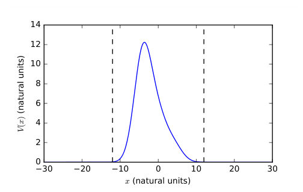
<figcaption class="paper-figure-caption"><b>Fig 1.</b> FIG. 1. The spatially asymmetric barrier V (x) used in the simulations, in natural units. One edge is sharp and the other decays over an extended smooth tail, while the asymptotic values on the two sides coincide, V (x →−∞) = V (x → +∞) = 0. The barrier height exceeds the rest energy mc2 = 1, so the dynamics lies in the Klein regime. The dashed lines at x = ±12 delimit the interior region; |x| &gt; 12 defines the reflected and transmitted populations quoted in the text.</figcaption>
</figure>
<figure class="paper-figure-card">
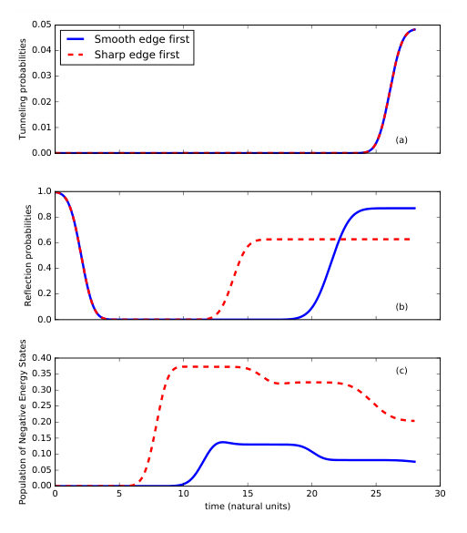
<figcaption class="paper-figure-caption"><b>Fig 2.</b> FIG. 2. Time-resolved observables for the two propagations, one in which the wave packet meets the sharp edge of the barrier of Fig. 1 first and one in which it meets the smooth edge first. (a) Tunneling probability, i.e., the population be- yond the barrier. The two curves coincide, confirming Theo- rem 1 (b) Reflection probability, i.e., the population in front of the barrier. The two curves separate. (c) Population of the negative-energy states. The sharp edge generates about four times more antiparticles than the smooth edge; this popula- tion remains under the barrier and accounts for the difference in panel (b).</figcaption>
</figure>
<figure class="paper-figure-card">

<figcaption class="paper-figure-caption"><b>Fig 3.</b> Fig. 3(a), is a single compact positive Gaussian displaced toward the barrier along the momentum axis. The barrier of Fig. 1 is held fixed throughout; the two propagations differ only in where the initial packet is pre- pared and in which direction it is launched, so that it en- counters the sharp edge first in one run and the smooth edge first in the other. In the first run the packet starts to the left of the barrier and moves toward +x: we then call the probability of finding the particle at x &lt; −12 the reflection probability and the probability of finding it at x &gt; 12 the tunneling probability (see Fig. 2). In the sec- ond run the packet starts to the right of the barrier and moves...</figcaption>
</figure>
<figure class="paper-figure-card">
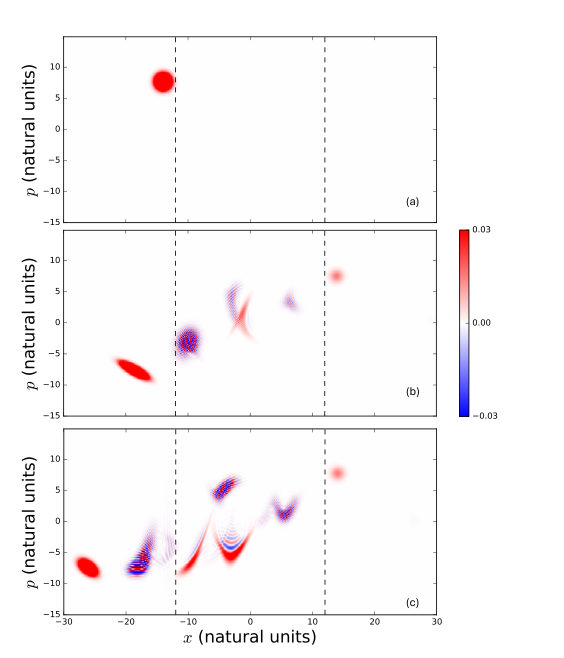
<figcaption class="paper-figure-caption"><b>Fig 4.</b> FIG. 3. Phase-space portrait of the two propagations, dis- played as the Wigner function W(x, p) in natural units. (a) Initial state, in the geometry in which it faces the smooth edge. (b) Final state of that run. (c) Final state of the run facing the sharp edge, plotted after the phase-space inversion W(x, p) →W(−x, −p), which maps the mirrored geometry onto the axes of panel (b) and allows the two final states to be compared directly. The dashed lines at x = ±12 delimit the interior region entering Fig. 2. The sharp edge generates a rich interference pattern, the phase-space signature of zit- terbewegung, concentrated underneath the barrier.</figcaption>
</figure>
</div>

<p><strong>Summary.</strong> This paper proves that the transmission probability for Klein tunneling through an asymmetric barrier is symmetric. However, using time-dependent simulations, the authors show this asymmetry is not in the transmitted current but rather in the generation of negative-energy states within the barrier region. Therefore, directional control in this regime must be sought by analyzing pair production rather than just particle flux.</p>
<p><strong>Why it may be interesting.</strong> The finding that asymptotic transport is robust while internal dynamics are sensitive provides a nuanced view of how symmetry breaking can be 'hidden' from simple current measurements, which is relevant for understanding non-equilibrium quantum transport in mesoscopic systems.</p>
<details>
<summary>Detailed structure</summary>
<p><strong>Main problem.</strong> The study investigates whether Klein tunneling through a spatially asymmetric potential barrier maintains left-right symmetry for Dirac fermions, contrasting with expectations of asymmetry.</p>
<p><strong>Main result.</strong> Transmission probability remains symmetric ($T_L = T_R$), but the asymmetry manifests in the interior dynamics as a directionally dependent population of negative-energy states (pair creation).</p>
<p><strong>Method.</strong> The analysis combines time-independent scattering matrix arguments with time-dependent Wigner-function simulations in phase space.</p>
<p><strong>Model / system.</strong> The system is modeled by the relativistic Dirac equation describing quantum particle scattering off a one-dimensional, spatially asymmetric potential barrier $M(x)$.</p>
<p><strong>Key observables.</strong> Transmission probability ($T$), Reflection probability ($R$), and the population of under-barrier negative-energy states.</p>
<p><strong>Important parameters / regimes.</strong> The analysis is restricted to asymptotic leads carrying exactly one propagating channel per direction.</p>
<p><strong>Assumptions / limitations.</strong> The stationary state analysis assumes current conservation, while the time-dependent part relies on Wigner function propagation in phase space.</p>
<p><strong>Figures summary.</strong> Figures illustrate the tunneling probability, reflection probability, and negative energy population for both left and right incidence across an asymmetric barrier, comparing sharp vs. smooth edges.</p>
<p><strong>Paper structure.</strong> The paper first uses time-independent scattering theory to prove $T_L = T_R$. It then employs time-dependent Wigner-function simulations to locate the source of asymmetry in the interior negative-energy population, concluding that pair production, not current, carries the directional information.</p>
</details>
<details>
<summary>Abstract</summary>
<p>We prove that the transmission probability for the Klein tunneling through a spatially asymmetric barrier is the same for left and right incidence whenever each asymptotic lead carries a single propagating channel per direction. Time-dependent Wigner-function simulations confirm this and locate the missing directionality in the barrier's interior, where a sharp edge generates several times more under-barrier negative-energy population than a smooth one. Directional control in the Klein regime therefore resides in pair production rather than in the transmitted current.</p>
</details>
<p><sub><a href="#top">↑ back to top</a></sub></p>

<p><a id="paper-2607.22176"></a></p>
<h3 id="ghz-non-reciprocal-optical-conductivity-in-hematite-math11math-math12math">⭐ <a href="http://arxiv.org/abs/2607.22176v1">GHz non-reciprocal optical conductivity in hematite ($α$-$\text{Fe}_2\text{O}_3$)</a></h3>
<p><strong>Highlighted author(s):</strong> Johannes Knolle<br>
<strong>Authors:</strong> Peng Rao, Johannes Gröbmeyer, P. Peter Stavropoulos, Alexander Mook, Matthias Althammer, Hans Huebl, Alexander Holleitner, Johannes Knolle<br>
<strong>Type:</strong> theory · <strong>Category:</strong> strongly correlated electrons · <strong>PDF:</strong> <a href="https://arxiv.org/pdf/2607.22176v1">https://arxiv.org/pdf/2607.22176v1</a><br>
<strong>Analysis basis:</strong> full PDF text, analyzed in chunks
<strong>Topic relevance:</strong> <code>exotic spin models in light-matter</code> <strong>3/5</strong> · <code>spintronics-quantum-optics interface</code> <strong>3/5</strong> · <code>Keldysh / 2PI / non-Gaussian methods</code> <strong>1/5</strong> · <code>analog quantum simulation</code> <strong>1/5</strong> · <code>non-equilibrium dynamics</code> <strong>1/5</strong></p>
<div class="figure-strip-hint">↔ Scroll figures horizontally</div>
<div class="paper-figures-scroll">
<figure class="paper-figure-card">
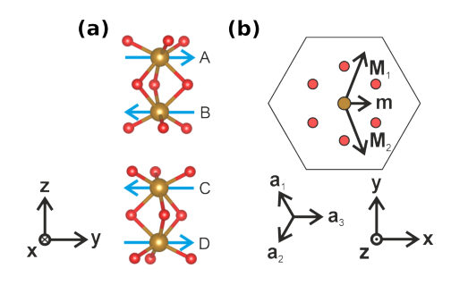
<figcaption class="paper-figure-caption"><b>Fig 1.</b> FIG. 1. Illustration of the unit cell of hematite (α −Fe2O3), showing iron atoms in brown and oxygen atoms in red. (a) Side-view of the unit cell with the magnetic moments shown in blue. (b) Top view looking down the c-axis. The in-plane projection of the lattice and the vectors a1, a2 and a3 are shown. The magnetic moments M1 (sub- lattices A, D) and M2 (sublattices B,C) are almost anti-parallel and in-plane.</figcaption>
</figure>
<figure class="paper-figure-card">
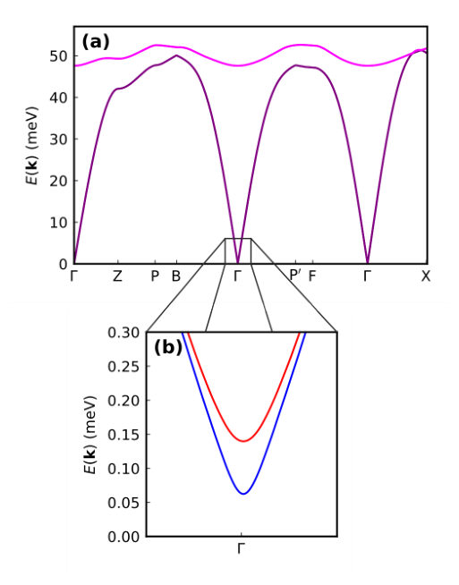
<figcaption class="paper-figure-caption"><b>Fig 2.</b> FIG. 2. Linear spin wave spectrum for the spin Hamiltonian Eq. (1). (a) Magnon spectrum across the Brillouin zone (BZ) of αFe2O3. Here, four magnon branches are pair-wise almost degenerate (ma- genta and purple lines for each pair). (b) The magnon spectrum near the Γ-point. The lower magnon branch corresponds to in-plane os- cillations of the Ne´el vector and the higher branch to out-of-plane oscillations.</figcaption>
</figure>
<figure class="paper-figure-card">
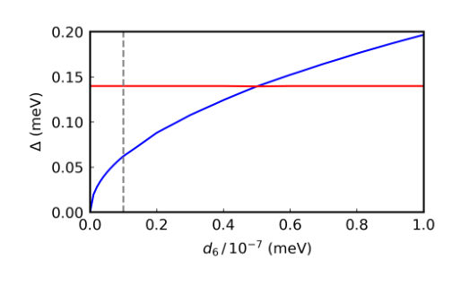
<figcaption class="paper-figure-caption"><b>Fig 3.</b> FIG. 3. Minimal magnon gaps energy of the two lower branches in Fig. 2(b) as a function of the triaxial basal anisotropy strength d6 in Eq. (6). The gray dashed line corresponds to d6 = 10−8 meV used elsewhere in the paper. Only the blue branch depends on d6 since it corresponds to in-plane oscillations. The strong dependence on d6 is due to the exchange enhancement effect discussed below Eq. (8).</figcaption>
</figure>
<figure class="paper-figure-card">
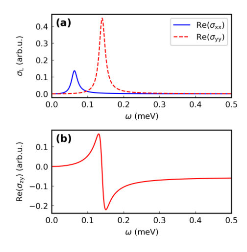
<figcaption class="paper-figure-caption"><b>Fig 4.</b> FIG. 4. Real part of conductivities of the spin Hamiltonian Eq. (1) as a function of frequency ω. (a) Longitudinal conductivities where Re σxx and Re σyy couple to the lower and higher magnon branches in Fig. (2)(b) respectively. (b) The non-zero antisymmetric conduc- tivity component satisfying Eq. (22), coupling to the higher magnon branch. The other off-diagonal conductivities are zero.</figcaption>
</figure>
<figure class="paper-figure-card">
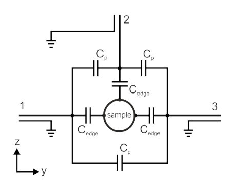
<figcaption class="paper-figure-caption"><b>Fig 5.</b> FIG. 5. Scheme of a three-port circulator with the sample material in the center. The circulator ports 1, 2, and 3 are capacitively coupled via Cedge to the sample (hematite). The term Cp describes the para- sitic coupling between the port arms.</figcaption>
</figure>
</div>

<p><strong>Summary.</strong> The paper theoretically investigates how Dzyaloshinskii-Moriya interactions induce a net magnetization in hematite ($\alpha$-Fe$_2$O$_3$), leading to non-reciprocal optical conductivity. By calculating the anomalous Hall conductivity using magnon theory, the authors demonstrate that this material can be engineered for use in high-frequency non-reciprocal circulators.</p>
<p><strong>Why it may be interesting.</strong> This work connects fundamental magnetism (DMI, canting) directly to macroscopic quantum phenomena like non-reciprocity and device physics (circulators), which is highly relevant for understanding spin-charge coupling in magnetic insulators.</p>
<details>
<summary>Detailed structure</summary>
<p><strong>Main problem.</strong> The study investigates non-reciprocal optical conductivity in hematite ($\alpha$-Fe$_2$O$_3$) within the GHz to THz frequency range.</p>
<p><strong>Main result.</strong> The finite net magnetic moment, induced by Dzyaloshinskii-Moriya interactions (DMI), leads to a non-zero anomalous Hall conductivity and allows for the design of non-reciprocal circulators.</p>
<p><strong>Method.</strong> Linear response theory is used with Kubo's formula applied to single-magnon contributions derived from linear spin wave theory analysis of the magnetic Hamiltonian.</p>
<p><strong>Model / system.</strong> The system is hematite ($\alpha$-Fe$_2$O$_3$), modeled as a canted easy-plane antiferromagnet. The physics is governed by a spin Hamiltonian including exchange, DMI, and anisotropy terms.</p>
<p><strong>Key observables.</strong> Non-reciprocal optical conductivity tensor components ($\sigma_{xy}$), anomalous Hall conductivity ($\sigma^{(as)}$), and circulator transmission amplitude ($|S_{13}|/|S_{31}|$)</p>
<p><strong>Important parameters / regimes.</strong> DMI energy scale ($\sim 0.1 	ext{ meV}$); magnetic anisotropy terms ($d_2, d_6$); operating frequency range (GHz to THz).</p>
<p><strong>Assumptions / limitations.</strong> The analysis relies on the single-magnon approximation for conductivity and treats the system in the weak ferromagnetic phase above $T_M$.</p>
<p><strong>Figures summary.</strong> Figures illustrate the magnon spectrum near $\Gamma$, the dependence of magnon gaps on anisotropy, and simulated non-reciprocal responses $|S_{13}|/|S_{31}|$ vs. frequency for a circulator.</p>
<p><strong>Paper structure.</strong> The paper progresses from establishing the magnetic ground state via spin Hamiltonian analysis to calculating the optical conductivity using linear response theory, culminating in the application of these results to model a three-port non-reciprocal circulator.</p>
</details>
<details>
<summary>Abstract</summary>
<p>We study the non-reciprocal properties of the iron oxide $α$-Fe$_2$O$_3$ (hematite) in the canted easy-plane antiferromagnetic phase, specifically in the GHz to THz frequency range. First, using the the microscopic spin Hamiltonian, we obtain the correct classical ground state where the canting is induced by the Dzyaloshinskii-Moriya interactions (DMI). The magnon spectrum is simulated using linear spin wave theory. We then compute the polarizability and the sub-gap optical conductivities using linear response. We find that the conductivity tensor contains frequency peaks at the zero momentum magnon gaps of order $0.1~$meV which can be tuned by the DMI and on-site anisotropic spin interactions. Furthermore, we show that the canting-induced net magnetic moment $\mathbf{m}$ represents a measure for the effective time-reversal-symmetry breaking and non-reciprocity of the system: a finite $\mathbf{m}$ results in a non-zero Hall conductivity. Finally, we discuss the prospective application of hematite in non-reciprocal circulator design, by computing the non-reciprocal circulator transmission amplitude using the conductivities as input.</p>
</details>
<p><sub><a href="#top">↑ back to top</a></sub></p>

<p><a id="paper-2607.22503"></a></p>
<h3 id="correlated-coherent-errors-in-stabilizer-codes-a-general-cumulant-framework-and-interference-based-error-suppression">⭐ <a href="http://arxiv.org/abs/2607.22503v1">Correlated Coherent Errors in Stabilizer Codes: A General Cumulant Framework and Interference-Based Error Suppression</a></h3>
<p><strong>Highlighted author(s):</strong> Aashish Clerk<br>
<strong>Authors:</strong> Rohan N Rajmohan, Antoine Brillant, Peter Groszkowski, Alireza Seif, Jens Koch, Aashish Clerk<br>
<strong>Type:</strong> theory · <strong>Category:</strong> quantum information and computing · <strong>PDF:</strong> <a href="https://arxiv.org/pdf/2607.22503v1">https://arxiv.org/pdf/2607.22503v1</a><br>
<strong>Analysis basis:</strong> full PDF text, analyzed in chunks
<strong>Topic relevance:</strong> <code>correlated / nonlocal dissipation</code> <strong>2/5</strong> · <code>Keldysh / 2PI / non-Gaussian methods</code> <strong>1/5</strong> · <code>methods for driven-dissipative</code> <strong>1/5</strong></p>
<div class="figure-strip-hint">↔ Scroll figures horizontally</div>
<div class="paper-figures-scroll">
<figure class="paper-figure-card">
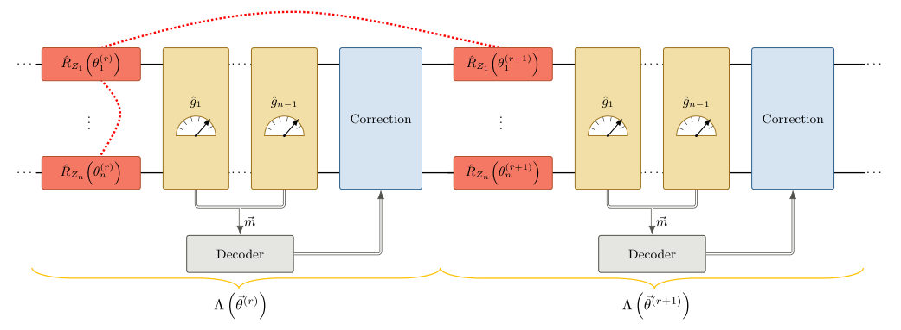
<figcaption class="paper-figure-caption"><b>Fig 1.</b> Figure 1. Quantum-circuit representation of two consecutive QEC cycles for a stabilizer code. In each cycle r, errors on the n data qubits (red boxes) are modeled as coherent Z rotations, ˆRZi(θ(r) i ) [Eq. (1)], where the stochastic rotation angles may be correlated both across qubits and across cycles (dashed red lines). The stabilizer generators ˆgi are measured directly (yellow boxes), and the resulting syndrome ⃗m is decoded using a maximum-likelihood decoder. This then determines the recovery operation (blue box). For a fixed realization of the correlated noise, the action of each complete QEC cycle on the data qubits, restricted to a stabilizer eigenspace, is described by an...</figcaption>
</figure>
<figure class="paper-figure-card">
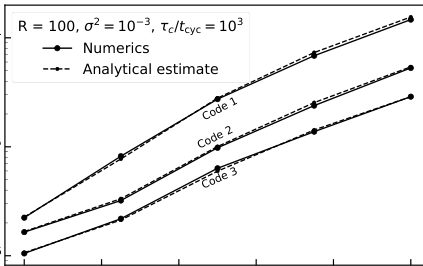
<figcaption class="paper-figure-caption"><b>Fig 2.</b> Figure 2. Infidelity of random odd-dZ CSS codes with the conventional syndrome-zero encoding under increasing strength of positive noise correlations. We plot the logical infidelity ϵ(R) after R = 100 cycles for three random J9, 1K CSS codes [see App. J] with dZ = 5, using the conventional syndrome-zero encoding and the noise model in Eq. (41), with noise strength σ2 and inter-cycle correlation range τc/tcyc fixed while inter-qubit correlation strength ϱ is varied over [0, 1]. Over this range, noise correlations are positive, and ϵ(R) increases monotonically with ϱ. Solid lines show numerical results, obtained by noise-averaging the exact expression in Eq. (23); error bars are within marker...</figcaption>
</figure>
<figure class="paper-figure-card">
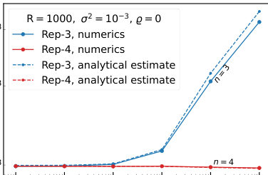
<figcaption class="paper-figure-caption"><b>Fig 3.</b> Figure 3. Impact of inter-cycle noise correlation range on infidelity ϵ(R) and sensitivity to the parity of the code’s Z distance. We plot ϵ(R) after R = 1000 cycles for the three-qubit (Rep-3; blue, circles) and four-qubit (Rep-4; red, squares) phase-flip repetition codes, under the noise model in Eq. (41), with noise strength σ2 and inter-qubit correlation strength ϱ fixed. The inter-cycle correlation range τc/tcyc is varied. For τc/tcyc →0, the two codes perform similarly. Increasing τc/tcyc increases ϵ(R) for the Rep-3 code, whereas for the Rep-4 code, ϵ(R) decreases slightly. Solid lines show numerical results, obtained by noise-averaging the exact expression in Eq. (23); error bars...</figcaption>
</figure>
<figure class="paper-figure-card">
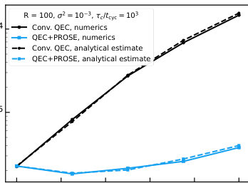
<figcaption class="paper-figure-caption"><b>Fig 4.</b> Figure 4. Identifying PROSE encodings and corre- sponding fidelity improvement. Results here are for one of the J9, 1K CSS codes [see App. J] and noise model from Fig. 2. Noise strength σ2 and inter-cycle correlation range τc/tcyc are fixed, and inter-qubit correlation strength ϱ varies over [0, 1]. (a) Logical infidelity for a single QEC cycle for different eigenspaces of the three Z stabilizers, as a function of ϱ. The eigenvalues of the X stabilizer generators in the codespace are fixed to +1. There are 3 PROSEs (i.e., optimal encodings) for each ϱ &gt; 0, indicated by dashed white lines; at ϱ = 0 all encodings perform equivalently. (b) Logical infidelity ϵ(R) for R = 100 as ϱ is varied,...</figcaption>
</figure>
<figure class="paper-figure-card">
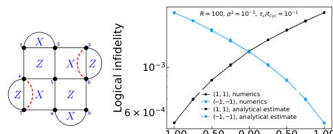
<figcaption class="paper-figure-caption"><b>Fig 5.</b> Figure 5. Impact of correlations with and without PROSE encoding. Left: A distance-3 rotated surface code, with X and Z stabilizer generators and qubits labeled. Right: Logical infidelity ϵ(R) after R = 100 QEC cycles for this code, under a simplified version of the noise model in Eq. (41) with intra-cycle correlations only between the qubit pairs (3, 6) and (4, 7), both controlled by ϱ. We vary ϱ while holding the noise strength σ2 and inter-cycle correlation range τc/tcyc fixed. For each value of ϱ, the PROSE is one of two codespaces distinguished by the eigenvalues of ˆZ3 ˆZ6 and ˆZ4 ˆZ7, with all other stabilizer eigenvalues fixed to +1. For ϱ &gt; 0, the (−1, −1) eigenspace (blue,...</figcaption>
</figure>
</div>

<p><strong>Summary.</strong> This work provides a comprehensive theoretical framework for analyzing how correlated coherent errors affect stabilizer codes during QEC. By developing the PROSE encoding strategy, the authors show that selecting the optimal codespace can actively suppress these structured errors. Crucially, they demonstrate that positive noise correlations, often viewed as detrimental, can actually be harnessed as a resource to improve error correction performance.</p>
<p><strong>Why it may be interesting.</strong> The ability to treat structured, non-Markovian noise (coherent errors) analytically is highly valuable for designing robust quantum hardware protocols, especially in superconducting or trapped-ion platforms where correlated noise sources are common.</p>
<details>
<summary>Detailed structure</summary>
<p><strong>Main problem.</strong> The paper develops a general analytical framework to treat correlated coherent errors occurring during repeated Quantum Error Correction (QEC) cycles in stabilizer codes.</p>
<p><strong>Main result.</strong> It introduces Protected Stabilizer Eigenspace (PROSE) encoding, which can exploit noise correlations to reduce logical infidelity below the level predicted by uncorrelated error models. Furthermore, PROSE combined with Pauli twirling matches or outperforms standard error suppression techniques.</p>
<p><strong>Method.</strong> The authors derive the exact logical channel using a general cumulant-expansion framework, yielding a non-perturbative expression for the noise-averaged logical infidelity.</p>
<p><strong>Model / system.</strong> The system analyzed is quantum information encoded in stabilizer codes. The noise model specifically considers correlated coherent dephasing errors (Z-noise) acting on data qubits during each QEC cycle.</p>
<p><strong>Key observables.</strong> Logical infidelity ($\epsilon(R)$), which quantifies the error rate after $R$ cycles, and the dependence of the induced channel on the chosen stabilizer eigenspace.</p>
<p><strong>Important parameters / regimes.</strong> The noise correlation structure (positive correlations are shown to be beneficial), the number of QEC cycles ($R$), and the strength of coherent errors ($   heta$).</p>
<p><strong>Assumptions / limitations.</strong> The analysis assumes that the syndrome measurement and recovery operations within a single QEC cycle are noiseless. The derivations rely on cumulant expansions, which provide analytical insight into the noise average.</p>
<p><strong>Figures summary.</strong> Figures illustrate quantum circuits for multiple QEC cycles with coherent Z errors; captions highlight how positive noise correlations can reduce logical infidelity below the uncorrelated baseline when using PROSE encoding.</p>
<p><strong>Paper structure.</strong> The paper progresses by first deriving the exact channel under correlated noise, then developing the general cumulant framework. It introduces PROSE encoding based on the dependence of the channel on the codespace choice. Finally, it compares PROSE+twirling against standard techniques like dynamical decoupling and Pauli twirling.</p>
</details>
<details>
<summary>Abstract</summary>
<p>Coherent errors in stabilizer codes are often correlated across qubits and QEC cycles. Having a general analytical treatment of such noise would thus be extremely valuable. We derive here the exact logical channel induced by repeated QEC cycles under correlated coherent $Z$ noise, and develop a broadly general cumulant-expansion framework that yields a tractable expression for the noise-averaged logical infidelity. Crucially, this expression is non-perturbative in the noise, and applies to arbitrary stabilizer codes and correlation structures. It reveals a feature with no analogue in standard stochastic Pauli error models: the induced channel depends on which stabilizer eigenspace is chosen as the codespace. Exploiting this, we introduce protected stabilizer eigenspace (PROSE) encoding, an error-suppression strategy that selects the optimal codespace. We show that this eigenspace can be efficiently identified in many relevant situations. Further, when combined with logical Pauli twirling, PROSE matches or outperforms standard error suppression techniques (dynamical decoupling, Pauli twirling of physical qubits). We also show that noise correlations, usually assumed to be harmful to QEC, can instead be a resource: with the right encoding, even positive correlations reduce the logical infidelity below the uncorrelated baseline. Our results offer a new, broadly applicable lens on correlated coherent noise in stabilizer codes.</p>
</details>
<p><sub><a href="#top">↑ back to top</a></sub></p>

<p><a id="paper-2607.22495"></a></p>
<h3 id="fractal-quantum-many-body-scars-and-hamiltonian-inverse-design-from-zx-calculus"><a href="http://arxiv.org/abs/2607.22495v1">Fractal quantum many-body scars and Hamiltonian inverse design from ZX-calculus</a></h3>
<p><strong>Authors:</strong> Marcin Szyniszewski<br>
<strong>Type:</strong> theory · <strong>Category:</strong> other · <strong>PDF:</strong> <a href="https://arxiv.org/pdf/2607.22495v1">https://arxiv.org/pdf/2607.22495v1</a><br>
<strong>Analysis basis:</strong> full PDF text, analyzed in chunks
<strong>Topic relevance:</strong> 🔥 <code>scars &amp; prethermalization</code> <strong>5/5</strong> · <code>analog quantum simulation</code> <strong>3/5</strong> · <code>entanglement &amp; information structure</code> <strong>3/5</strong> · <code>non-equilibrium dynamics</code> <strong>3/5</strong> · <code>methods for driven-dissipative</code> <strong>2/5</strong> · <code>non-equilibrium universality</code> <strong>2/5</strong> · <code>Keldysh / 2PI / non-Gaussian methods</code> <strong>1/5</strong> · <code>correlated / nonlocal dissipation</code> <strong>1/5</strong> · <code>driven-dissipative phase transition</code> <strong>1/5</strong></p>
<div class="figure-strip-hint">↔ Scroll figures horizontally</div>
<div class="paper-figures-scroll">
<figure class="paper-figure-card">
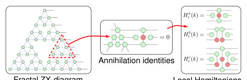
<figcaption class="paper-figure-caption"><b>Fig 1.</b> FIG. 1. Summary of the methodology: a fractal ZX-diagram state with atypical properties is selected as a candidate many- body quantum scar; parent Hamiltonian techniques and local ZX identities are used to find annihilators; associated local Hamiltonians are constructed that host the fractal ZX-diagram as a scar.</figcaption>
</figure>
<figure class="paper-figure-card">
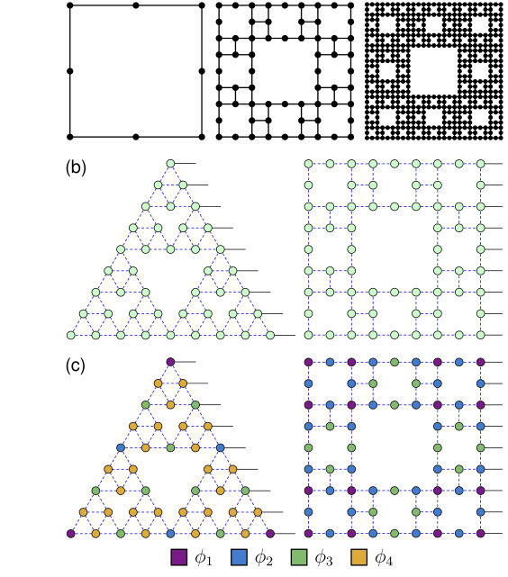
<figcaption class="paper-figure-caption"><b>Fig 2.</b> FIG. 2. (a) Successive generations g for graphs of the Sierpi´nski triangle (top row) and the Sierpi´nski carpet (bottom row). (b) Example fractal ZX-diagrams constructed from the triangle g = 3 and the carpet g = 2. Spider phases are omitted for clarity. (c) Generation-dependent spider phases ϕg in the ZX-diagrams are indicated here by color.</figcaption>
</figure>
<figure class="paper-figure-card">
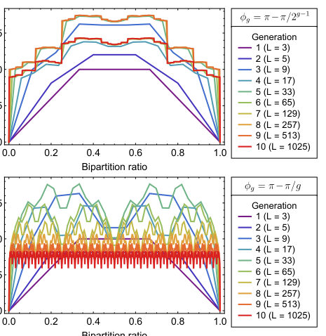
<figcaption class="paper-figure-caption"><b>Fig 3.</b> FIG. 4. The von Neumann entanglement entropy as a function of the bipartition ratio for successive generations g (and the corresponding system sizes L) for the Sierpi´nski triangle ZX- diagram. Z-spider phases are (a) ϕg = π(1 −1/2g−1) and (b) ϕg = π(1 −1/g).</figcaption>
</figure>
<figure class="paper-figure-card">
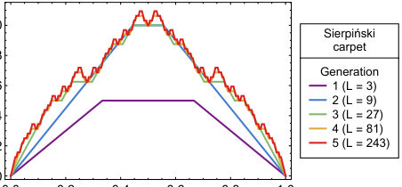
<figcaption class="paper-figure-caption"><b>Fig 4.</b> FIG. 3. Minimum-cut entanglement bound for states repre- sented by ZX-diagrams based on (a) the Sierpi´nski triangle and (b) the Sierpi´nski carpet, for successive generations g (and the corresponding system sizes L). The maximum min-cut grows logarithmically with system size L for the triangle and as a power law ∼Llog3 2 for the carpet.</figcaption>
</figure>
<figure class="paper-figure-card">
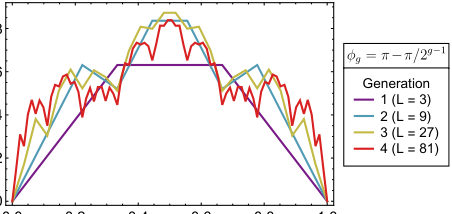
<figcaption class="paper-figure-caption"><b>Fig 5.</b> FIG. 5. Entanglement entropy divided by log2 L as a function of the bipartition ratio for different generations (and the cor- responding system sizes) of the Sierpi´nski carpet ZX-diagram. Z-spider phases are ϕg = π(1 −1/2g−1). The approximate collapse of the curves is consistent with logarithmic entangle- ment growth over the accessible system sizes, together with a self-similar spatial profile.</figcaption>
</figure>
</div>

<p><strong>Summary.</strong> This paper introduces a powerful framework using ZX-calculus to design quantum many-body scars based on fractal geometries. By constructing these states and their associated Hamiltonians analytically, the authors demonstrate how to embed exact, atypical eigenstates into otherwise chaotic energy spectra. This provides a novel, diagrammatically verifiable route for Hamiltonian inverse design in condensed matter physics.</p>
<p><strong>Why it may be interesting.</strong> This work bridges advanced diagrammatic quantum computation tools (ZX-calculus) directly into condensed matter theory by providing an explicit, constructive method for generating non-trivial, non-thermal eigenstates (scars) in complex many-body systems.</p>
<details>
<summary>Detailed structure</summary>
<p><strong>Main problem.</strong> The primary goal is to develop a systematic framework using ZX-calculus for Hamiltonian inverse design, specifically constructing quantum many-body scars (QMBS) that are atypical eigenstates embedded within otherwise thermalizing systems.</p>
<p><strong>Main result.</strong> The paper demonstrates that the ZX-calculus can serve as this inverse design tool, allowing the explicit construction and mathematical relationship between fractal scar states, their local annihilators, and the chaotic Hamiltonians embedding them.</p>
<p><strong>Method.</strong> The authors utilize diagrammatic languages (ZX-calculus) to encode fractal many-body states derived from Sierpiński structures. They combine these with parent-Hamiltonian techniques and local ZX identities to construct exact scars and then deform the Hamiltonian to induce chaos while preserving the scar state.</p>
<p><strong>Model / system.</strong> The model involves quantum many-body systems whose states are represented by fractal patterns (Sierpiński triangle/carpet) encoded in ZX-diagrams. The dynamics are governed by Hamiltonians constructed via local terms derived from these diagrams, allowing for embedding into chaotic spectra.</p>
<p><strong>Key observables.</strong> Entanglement entropy (showing area law or logarithmic scaling), local expectation values ($\langle X_i 
angle$), and spectral statistics (diagnosing transition between Poissonian/integrable and Wigner-Dyson/chaotic regimes).</p>
<p><strong>Important parameters / regimes.</strong> The fractal generation parameter ($g$) defining the level of self-similarity, and system size ($L$).</p>
<p><strong>Assumptions / limitations.</strong> It is assumed that the ZX-calculus provides a sufficiently rigorous graphical language to certify both the state structure and the Hamiltonian constraints (annihilation conditions).</p>
<p><strong>Figures summary.</strong> Figures illustrate the methodology: selecting fractal ZX-diagrams as scars, using parent Hamiltonians/local identities for construction, and showing entanglement entropy scaling ($   ext{S}$ vs. bipartition ratio) for triangle (area law) and carpet (logarithmic scaling) families.</p>
<p><strong>Paper structure.</strong> The paper progresses by first establishing the use of ZX-calculus for state representation; then, it details the fractal construction of states with specific entanglement properties; subsequently, it applies parent-Hamiltonian methods to find annihilators; finally, it constructs a local deformation to embed these scars into chaotic Hamiltonians.</p>
</details>
<details>
<summary>Abstract</summary>
<p>Diagrammatic languages such as ZX-calculus provide compact and intuitive descriptions of quantum processes and have become established tools for circuit simplification, verification, and compilation. However, their potential as a framework for constructing many-body states and the Hamiltonians that host them remains largely unexplored. Here, we introduce families of fractal many-body states obtained from ZX-diagrams based on the Sierpiński triangle and Sierpiński carpet. By construction, the underlying graph connectivity imposes atypical subvolume-law minimum-cut upper bounds on the entanglement, while the actual states are parametrically less entangled still: the triangle family obeys an area law, whereas the carpet family displays approximately logarithmic scaling across the available system sizes. Additionally, their local observables retain fractal-like spatial structure, identifying these states as natural candidates for atypical eigenstates in otherwise thermalizing systems. For the triangle family, we combine parent-Hamiltonian methods, insights from ZX-calculus, and local ZX identities that certify exact annihilation of the target state, producing frustration-free Hamiltonians whose terms admit simple representations in the same diagrammatic language as the states themselves. We then construct a local deformation that produces chaotic level statistics while embedding the fractal ZX state in the bulk of the energy spectrum as an exact quantum many-body scar. Our results demonstrate, through this explicit construction, that ZX-calculus can serve as a framework for Hamiltonian inverse design, in which quantum many-body scars, their local annihilators, and the chaotic Hamiltonians embedding them can be constructed and related through a set of graphical identities.</p>
</details>
<p><sub><a href="#top">↑ back to top</a></sub></p>

<p><a id="paper-2607.21827"></a></p>
<h3 id="hydrodynamic-memory-and-long-time-tails-in-clean-frustrated-magnets"><a href="http://arxiv.org/abs/2607.21827v1">Hydrodynamic Memory and Long-Time Tails in Clean Frustrated Magnets</a></h3>
<p><strong>Authors:</strong> Yufei Pei, Claudio Castelnovo, Roderich Moessner<br>
<strong>Type:</strong> theory · <strong>Category:</strong> statistical mechanics · <strong>PDF:</strong> <a href="https://arxiv.org/pdf/2607.21827v1">https://arxiv.org/pdf/2607.21827v1</a><br>
<strong>Analysis basis:</strong> full PDF text, analyzed in chunks
<strong>Topic relevance:</strong> 🔥 <code>analog quantum simulation</code> <strong>4/5</strong> · 🔥 <code>exotic spin models in light-matter</code> <strong>4/5</strong> · <code>methods for driven-dissipative</code> <strong>3/5</strong> · <code>non-equilibrium dynamics</code> <strong>3/5</strong> · <code>spintronics-quantum-optics interface</code> <strong>3/5</strong> · <code>Keldysh / 2PI / non-Gaussian methods</code> <strong>2/5</strong> · <code>correlated / nonlocal dissipation</code> <strong>2/5</strong> · <code>driven-dissipative phase transition</code> <strong>2/5</strong> · <code>non-equilibrium universality</code> <strong>2/5</strong> · <code>Kondo &amp; dissipative impurity</code> <strong>1/5</strong> · <code>entanglement &amp; information structure</code> <strong>1/5</strong> · <code>scars &amp; prethermalization</code> <strong>1/5</strong></p>
<div class="figure-strip-hint">↔ Scroll figures horizontally</div>
<div class="paper-figures-scroll">
<figure class="paper-figure-card">
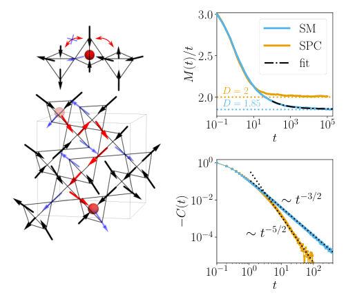
<figcaption class="paper-figure-caption"><b>Fig 1.</b> Figure 1. Schematic illustration of spin ice and monopole hopping. Top left panel: The middle tetrahedron (3-in-1-out) can hop to the right without increasing the system energy, by flipping a majority spin; hopping to the left instead creates a costly double monopole, by flipping a minority spin, and is suppressed at low temperatures. Bottom left panel: example of a (zero-energy) monopole trail, with the flipped spins shown in red, and the blocked spins at each step shown in blue. The cubic box indicates one unit cell of 16 spins. Right panels: mean-square displacement 𝑀(𝑡) (top) and (negative of the) velocity autocorrelation function 𝐶(𝑡) (bottom), for the standard model monopole dynamics...</figcaption>
</figure>
<figure class="paper-figure-card">
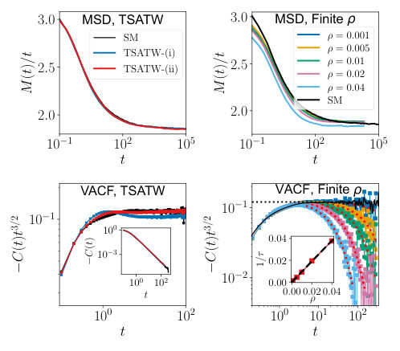
<figcaption class="paper-figure-caption"><b>Fig 2.</b> Figure 2. Left panels: comparison between the monopole ran- dom walk and the TSATW with suitably chosen parameters (see main text). We find good agreement for both the MSD (top) and VACF (−𝐶(𝑡)𝑡3/2, bottom main; −𝐶(𝑡), bottom inset). Right panels: simulations of standard model spin ice with fixed finite density of monopoles (microcanonical ensemble). The MSD (top) converges to the diffusive limit more quickly the higher the monopole density, and −𝐶(𝑡)𝑡3/2 (bottom) exhibits a long-time exponential decay due to monopole motion altering other monopoles’ memory trail (Dirac strings). Fits to the VACFs of the form 𝐶(𝑡) ∼𝑡−3/2𝑒−𝑡/𝜏are shown as red dotted lines. Bottom right panel inset: monopole...</figcaption>
</figure>
<figure class="paper-figure-card">
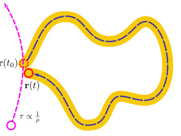
<figcaption class="paper-figure-caption"><b>Fig 3.</b> Figure 3. Schematic illustration of the origin of the hydrodynamic memory of a monopole random walk in spin ice. The monopole (red circle) wanders across the system (black dashed line), leaving behind a memory trail of traversed spins (yellow brush) with which it later interacts. At finite monopole density, other monopoles may scramble the stored memory (pink circle and dashed line), with a characteristic timescale inversely proportional to the monopole density.</figcaption>
</figure>
<figure class="paper-figure-card">
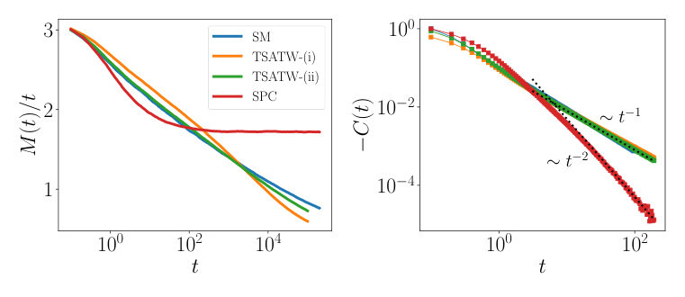
<figcaption class="paper-figure-caption"><b>Fig 4.</b> Figure 4. Two-dimensional square spin ice results. (a) MSD divided by time, 𝑀(𝑡)/𝑡, for the monopole random walk in 𝑑= 2 and for two TSATWs on the square lattice (see text); we also present results for the structural percolation cluster random walk on the square lattice. The VACFs −𝐶(𝑡) for the same processes are shown in panel (b).</figcaption>
</figure>
<figure class="paper-figure-card">
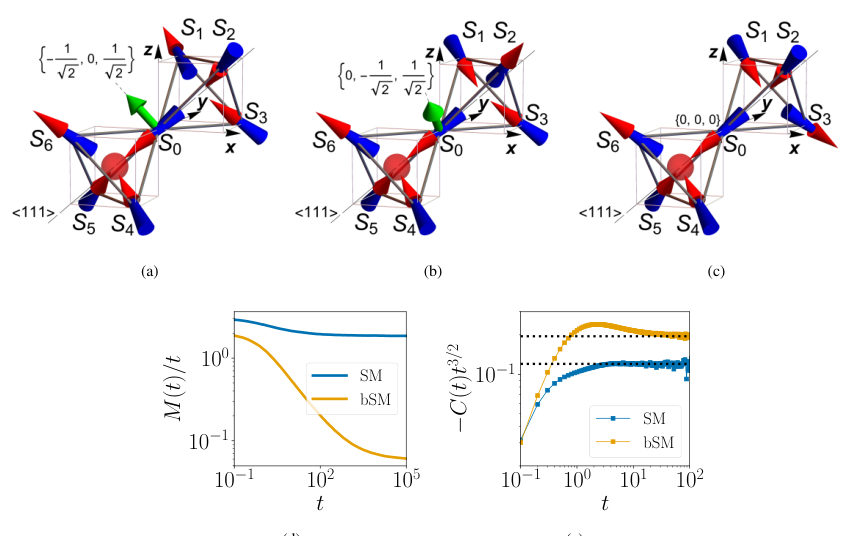
<figcaption class="paper-figure-caption"><b>Fig 5.</b> Figure 5. Illustration of symmetry-inequivalent configurations for a single spin and its nearest neighbors (a)-(c), for the case where flipping the central spin leads to monopole hopping. The direction of the transverse field due to nearest-neighbor exchange interactions is shown as a green arrow; it vanishes exactly by symmetry, and therefore it is not shown, in panel (c). We present a comparison between standard model (SM) and bSM results in panels (d), MSD divided by time 𝑀(𝑡)/𝑡, and (e), −𝐶(𝑡)𝑡3/2. The horizontal dashed lines are guides to the eye. Panels (a)-(c) are reproduced from Ref. 48.</figcaption>
</figure>
</div>

<p><strong>Summary.</strong> This work analyzes the slow relaxation dynamics of magnetic monopoles in frustrated spin ice. It shows that single monopoles exhibit hydrodynamic memory characterized by a $t^{-3/2}$ decay tail. Crucially, interactions between these quasiparticles at finite density introduce an exponential cutoff to this long-time memory effect.</p>
<p><strong>Why it may be interesting.</strong> The study provides a concrete, physical realization—frustrated magnets—to model complex non-Markovian dynamics, which is highly relevant for understanding relaxation in open quantum systems or disordered materials.</p>
<details>
<summary>Detailed structure</summary>
<p><strong>Main problem.</strong> The study investigates self-interacting stochastic processes, hydrodynamic memory effects, and non-Markovian quasiparticle transport in frustrated magnetic systems.</p>
<p><strong>Main result.</strong> Single monopoles exhibit an algebraic long-time tail ($t^{-3/2}$) in the velocity autocorrelation function, while finite density introduces an exponential cutoff due to inter-monopole interactions.</p>
<p><strong>Method.</strong> The analysis relies on calculating the Mean-Square Displacement (MSD) and the Velocity Autocorrelation Function (VACF), alongside analyzing the Power Spectral Density (PSD).</p>
<p><strong>Model / system.</strong> The system is based on nearest-neighbor classical spin ice (nnSI) on a pyrochlore lattice, where excitations are deconfined magnetic monopoles. The dynamics are modeled as stochastic single-spin-flip processes.</p>
<p><strong>Key observables.</strong> Mean-Square Displacement ($    ext{MSD}$), Velocity Autocorrelation Function ($  ext{VACF}$), and Power Spectral Density ($ ext{PSD}(\omega)$).</p>
<p><strong>Important parameters / regimes.</strong> Monopole density ($
ho$), temperature ($T$), and time scales ($ au$).</p>
<p><strong>Assumptions / limitations.</strong> The analysis often focuses on the low-temperature, dilute gas regime of monopoles; comparisons are made against idealized models like structural percolation clusters.</p>
<p><strong>Figures summary.</strong> Figures illustrate the comparison between monopole dynamics (showing $t^{-3/2}$ scaling) and other walks (like SPC showing $t^{-5/2}$), and demonstrate the exponential decay of $ ext{VACF}$ at finite density.</p>
<p><strong>Paper structure.</strong> The paper progresses by establishing the model (spin ice monopoles), calculating single-particle dynamics ($   ext{MSD}/   ext{VACF}$ scaling), introducing the effect of particle interactions (exponential cutoff), and finally analyzing spectral properties ($ ext{PSD}$) across different dynamic regimes.</p>
</details>
<details>
<summary>Abstract</summary>
<p>In a simple, clean but constrained magnet, we identify a self-interacting random walk with memory. For the motion of a single monopole -- a fractionalized quasiparticle in spin ice -- this produces a subtle and unusually slow relaxation toward diffusive motion. This is manifested as an algebraic long-time tail in the velocity autocorrelation function, decaying as $t^{-3/2}$. At finite monopole density, the interactions between the trails of different monopoles introduce an additional timescale, corresponding to the disruption of a monopole's memory by other monopoles, and leading to an exponential cutoff of the long-time tail. Our results identify clean frustrated magnets as microscopic platforms for studying self-interacting stochastic processes, hydrodynamic memory, and the emergence of non-Markovian quasiparticle transport from local Markovian dynamics.</p>
</details>
<p><sub><a href="#top">↑ back to top</a></sub></p>

<p><a id="paper-2607.22526"></a></p>
<h3 id="optomechanical-systems-with-a-fano-membrane-in-the-middle"><a href="http://arxiv.org/abs/2607.22526v1">Optomechanical systems with a Fano membrane in the middle</a></h3>
<p><strong>Authors:</strong> Lei Du, Aymeric Frerejean, Witlef Wieczorek, Janine Splettstoesser, Juliette Monsel<br>
<strong>Type:</strong> theory · <strong>Category:</strong> other · <strong>PDF:</strong> <a href="https://arxiv.org/pdf/2607.22526v1">https://arxiv.org/pdf/2607.22526v1</a><br>
<strong>Analysis basis:</strong> full PDF text, analyzed in chunks
<strong>Topic relevance:</strong> 🔥 <code>interference shaping light</code> <strong>4/5</strong> · <code>Keldysh / 2PI / non-Gaussian methods</code> <strong>3/5</strong> · <code>correlated cavity matter</code> <strong>3/5</strong> · <code>driven-dissipative phase transition</code> <strong>3/5</strong> · <code>methods for driven-dissipative</code> <strong>3/5</strong> · <code>analog quantum simulation</code> <strong>2/5</strong> · <code>correlated / nonlocal dissipation</code> <strong>2/5</strong> · <code>non-equilibrium dynamics</code> <strong>2/5</strong> · <code>non-equilibrium universality</code> <strong>2/5</strong> · <code>Tavis-Cummings &amp; cavity-many-emitter</code> <strong>1/5</strong> · <code>quantum measurements</code> <strong>1/5</strong></p>
<div class="figure-strip-hint">↔ Scroll figures horizontally</div>
<div class="paper-figures-scroll">
<figure class="paper-figure-card">
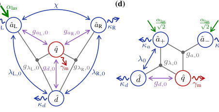
<figcaption class="paper-figure-caption"><b>Fig 1.</b> FIG. 1. (a) Schematics of the membrane-in-the-middle setup. (b) Diagram of the system in the transparent-membrane limit where only one cavity mode (ˆa) is relevant, coupling to the optical membrane mode ( ˆd) and to the mechanical mode (ˆq), see Sec. II A. (c) Dia- gram of the system in the reflective-membrane limit, with a left cav- ity mode (ˆaL), a right cavity mode (ˆaR) and the optical membrane mode ( ˆd), coupled to each other and to the mechanical mode (ˆq). (d) Diagram of the system in the reflective-membrane limit in the sym- metric case where the left and right cavity modes are identical, in the {ˆa−, ˆa+, ˆd} basis, see Sec. II B.</figcaption>
</figure>
<figure class="paper-figure-card">
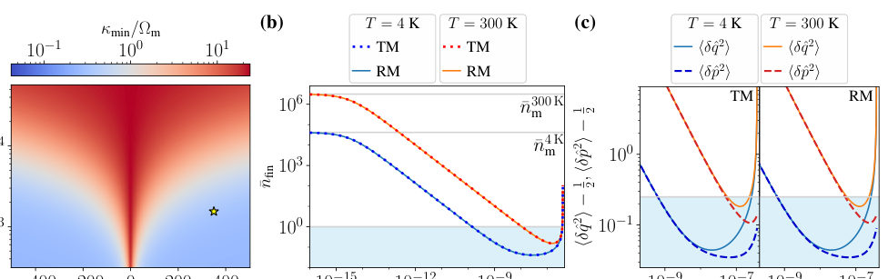
<figcaption class="paper-figure-caption"><b>Fig 2.</b> FIG. 2. (a) Effective sideband resolution κmin/Ωm as a function of the detuning δ∆(see Secs. II A 3 and II B 3 for the TM and RM cases respectively) and coherent coupling λ0. (b) Steady-state phonon number ¯nfin in the mechanical fluctuations as a function of the laser power Plas, for both the TM and the RM cases. In both cases, the narrowest normal mode is driven on its red sideband, ∆− TM/RM = Ωm. The horizontal gray lines indicate the thermal phonon numbers at 4 K and 300 K. (c) Mechanical position and momentum fluctuations ⟨δˆq2⟩and ⟨δˆp2⟩as functions of the laser power in the TM and RM cases. Blue shading indicates parameter regimes in which ¯nfin &lt; 1. The yellow star in panel (a)...</figcaption>
</figure>
<figure class="paper-figure-card">
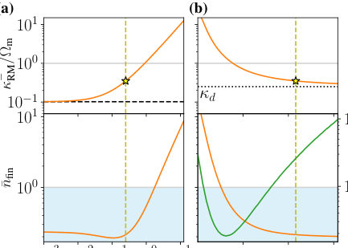
<figcaption class="paper-figure-caption"><b>Fig 3.</b> FIG. 3. Effective sideband resolution (top) and the correspond- ing steady-state phonon number (bottom), minimized over ∆− RM and Plas, as functions of (a) the intrinsic Fano-mode decay rate κd and (b) the detuning δ∆RM, varied by changing ωd. In panel (a), the dashed black line indicates the effective sideband resolution in the limit |δ∆RM| ≫λ0 and κd →0, κlim = λ2 0κa/(4δ∆2 RM) [Eq. (17)]. In the bottom of panel (b), the laser power at which the minimum ¯nfin is reached (green curve) is shown on the right axis. The blue shaded areas indicate parameter regimes in which ¯nfin &lt; 1. Unless otherwise indicated, the parameters are the same as for the RM case in Fig. 2(b), at T = 300 K. The...</figcaption>
</figure>
<figure class="paper-figure-card">
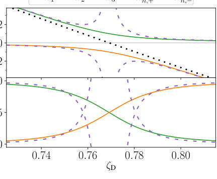
<figcaption class="paper-figure-caption"><b>Fig 4.</b> FIG. 4. Resonances ˜ωj = ωj −iγj, with j = 1, 2, 3 of the transfer- matrix model as functions of the polarizability ζD of the unpatterned membrane. Panel (b) is a zoom-in, in linear scale, of panel (a) in the area where ˜ω2 and ˜ω3 are almost equal. The solid lines were obtained by numerically solving Eq. (A23). The thick dotted and dashed black lines are the resonances for an unpatterned membrane [Eq. (A17)] and the gray horizontal lines indicate the FP resonances in the limits ζD →0 [Eq. (A18)] and ζD →∞[Eq. (A19)]. In panel (b), the purple dashed lines correspond to the analytical approxima- tions ˜ω0 n,+ + δ˜ω, ωF −δ˜ω [Eq. (A27)]. The parameters are L = 50 µm, ζN = 50, and ωF/2π =...</figcaption>
</figure>
<figure class="paper-figure-card">
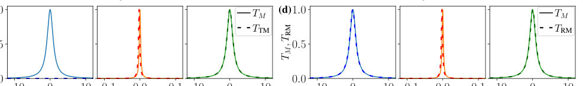
<figcaption class="paper-figure-caption"><b>Fig 5.</b> FIG. 5. Comparison of the transfer matrix and coupled-mode models: (a), (c) TM case and (b), (d) RM case. (a), (b) Resonances of the transfer-matrix model (solid lines) and of the corresponding coupled-mode model (dashed lines) as functions of the polarizability ζD. (c), (d) Transmission in energy through the setup around the resonance frequencies ωj, j = 1, 2, 3 of the transfer-matrix model at the values of ζD indicated by the vertical dotted black lines in (a) and (b), respectively. The parameters depending on ζD were computed using the expressions in Table I, while the other parameters are the ones given in Table II for the TM case in (a), (c) and the RM case in (b), (d).</figcaption>
</figure>
</div>

<p><strong>Summary.</strong> This paper investigates using a photonic-crystal Fano membrane within an optomechanical cavity to overcome limitations in linewidth control. By modeling both transparent and reflective membrane regimes, the authors show that the unique hybridization provided by the Fano resonance generates narrow optical modes. These engineered modes enable efficient ground-state cooling of the mechanical oscillator even when standard cavity parameters suggest otherwise.</p>
<p><strong>Why it may be interesting.</strong> This work directly addresses advanced topics in cavity quantum electrodynamics (cavity QED) and open quantum systems, specifically focusing on engineered coupling mechanisms to enhance ground-state cooling capabilities beyond standard limits.</p>
<details>
<summary>Detailed structure</summary>
<p><strong>Main problem.</strong> Conventional optomechanical systems suffer from limited control over optical linewidth, which restricts their performance when attempting ground-state cooling in the unresolved-sideband regime.</p>
<p><strong>Main result.</strong> The incorporation of a photonic-crystal Fano membrane enables spectral engineering, generating narrow optical normal modes that maintain efficient coupling to external drives and allow for ground-state cooling even when the bare cavity is in the unresolved sideband regime.</p>
<p><strong>Method.</strong> The authors employ quantum Langevin equations combined with a transfer-matrix description of the optical scattering problem to analyze the system dynamics across different reflectivity regimes.</p>
<p><strong>Model / system.</strong> The system is an optomechanical setup involving a Fabry-Pérot cavity containing a photonic-crystal Fano membrane. The model considers two limits: a transparent-membrane regime (single mode) and a reflective-membrane regime (two coupled subcavity modes).</p>
<p><strong>Key observables.</strong> Final phonon occupation number ($ar{n}_{fin}$), effective sideband resolution ($\kappa^-$), and the required laser power for cooling.</p>
<p><strong>Important parameters / regimes.</strong> Membrane reflectivity, coupling strengths ($g_{d,0}, g_{\lambda,0}$), cavity loss rates ($\kappa$), and mechanical frequency ($\Omega_m$).</p>
<p><strong>Assumptions / limitations.</strong> The analysis relies on linearizing the dynamics in the weak-coupling regime and assumes that the Fano membrane provides a frequency-dependent optical response superior to conventional dielectric membranes.</p>
<p><strong>Figures summary.</strong> Figure 1 illustrates schematics of the setup, detailing diagrams for both the transparent-membrane (TM) limit (single mode coupling) and the reflective-membrane (RM) limit ($\hat{a}_L$, $\hat{a}_R$ subcavities).</p>
<p><strong>Paper structure.</strong> The paper first establishes the limitations of conventional MIM systems. It then develops the theoretical framework by analyzing the Hamiltonian and dynamics for both TM and RM regimes using Langevin equations. Finally, it derives key results showing how Fano-induced hybridization enables superior cooling performance.</p>
</details>
<details>
<summary>Abstract</summary>
<p>Conventional membrane-in-the-middle (MIM) optomechanical systems offer limited control over the optical linewidth, which can limit their performance when operating in the unresolved-sideband regime. We investigate cavity optomechanics with a photonic-crystal Fano membrane placed at the center of a Fabry-Pérot (FP) cavity. In contrast to a conventional dielectric membrane, the photonic-crystal membrane supports a localized optical resonance, which hybridizes with the cavity field and enables spectral engineering of the relevant optical modes. Besides the usual dispersive optomechanical coupling associated with cavity-length changes, the membrane motion also modifies the Fano-mode resonance and its hybridization with the cavity field. We consider two limits set by the membrane reflectivity: a transparent-membrane regime with a single FP-like mode, and a reflective-membrane regime with two coupled subcavity modes. In the latter case, only the symmetric cavity mode hybridizes with the Fano mode, while the antisymmetric mode remains decoupled. Using quantum Langevin equations together with a transfer-matrix description of the optical scattering problem, we show that the Fano-induced hybridization can generate narrow optical normal modes that remain efficiently accessible to the external drive for experimentally realistic parameters. These modes can provide effective sideband resolution and enable ground-state cooling of the membrane motion even when the bare cavity is in the unresolved-sideband regime. Our results establish Fano MIM systems as a promising platform for spectral and optomechanical engineering.</p>
</details>
<p><sub><a href="#top">↑ back to top</a></sub></p>

<p><a id="paper-2607.21708"></a></p>
<h3 id="thermal-avalanches-in-a-quasiperiodic-xxz-model"><a href="http://arxiv.org/abs/2607.21708v1">Thermal avalanches in a quasiperiodic XXZ model</a></h3>
<p><strong>Authors:</strong> Paolo Molignini, Antonio Štrkalj<br>
<strong>Type:</strong> theory · <strong>Category:</strong> disordered systems and neural networks · <strong>PDF:</strong> <a href="https://arxiv.org/pdf/2607.21708v1">https://arxiv.org/pdf/2607.21708v1</a><br>
<strong>Analysis basis:</strong> full PDF text, analyzed in chunks
<strong>Topic relevance:</strong> 🔥 <code>non-equilibrium dynamics</code> <strong>4/5</strong> · <code>driven-dissipative phase transition</code> <strong>3/5</strong> · <code>entanglement &amp; information structure</code> <strong>3/5</strong> · <code>methods for driven-dissipative</code> <strong>3/5</strong> · <code>scars &amp; prethermalization</code> <strong>3/5</strong> · <code>analog quantum simulation</code> <strong>2/5</strong> · <code>correlated / nonlocal dissipation</code> <strong>2/5</strong> · <code>non-equilibrium universality</code> <strong>2/5</strong> · <code>Frenkel-Kontorova</code> <strong>1/5</strong> · <code>Keldysh / 2PI / non-Gaussian methods</code> <strong>1/5</strong> · <code>Kondo &amp; dissipative impurity</code> <strong>1/5</strong> · <code>exotic spin models in light-matter</code> <strong>1/5</strong></p>
<div class="figure-strip-hint">↔ Scroll figures horizontally</div>
<div class="paper-figures-scroll">
<figure class="paper-figure-card">
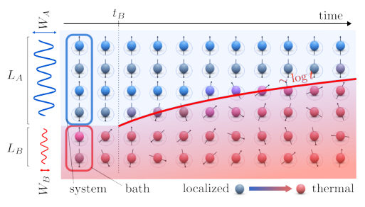
<figcaption class="paper-figure-caption"><b>Fig 1.</b> FIG. 1. Thermal bubble spreading in a quasiperi- odic spin chain. A localized subsystem A (blue, quasiperi- odic amplitude WA) is coupled to an ergodic bath B (red, quasiperiodic amplitude WB). The bath acts as a seed for thermalization, generating after time tB a thermal bubble that gradually invades subsystem A. The red curve indicates the position of the thermalization front, which propagates ap- proximately logarithmically in time.</figcaption>
</figure>
<figure class="paper-figure-card">
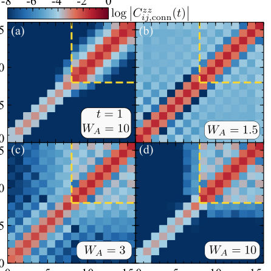
<figcaption class="paper-figure-caption"><b>Fig 2.</b> FIG. 2. Two-point connected correlation function. Logarithm of sample-averaged two-point correlations at short, t = 1 (a), and long times t = 10000 (b-d). The potential strength in the subsytem A is (a),(d) WA = 10, (b) W = 1.5, and (c) W = 3.0. The times are in units of the hopping J. In all plots, we used chains with L = 16 sites and the bath con- taining LB = 8 sites with weak potential strength WB = 0.5. The dynamics is calculated starting from an initial N´eel state. Dashed yellow lines enclose the sites belonging to the bath.</figcaption>
</figure>
<figure class="paper-figure-card">
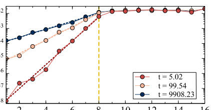
<figcaption class="paper-figure-caption"><b>Fig 3.</b> FIG. 3. Bath-averaged two-point correlation function and bath thermalization. (a) Mean of the off-diagonal elements of g(2) calculated only in the bath region, i.e. i, j ∈ LB, for three different strengths of the potential. (b) Bath- averaged g(2) as a function of the distance from the bath i plotted for three different hopping times. Dashed color-coded lines show the exponential fit inside the localized part of the system. The vertical dashed line shows the position of the last site in the localized subsystem, i.e. i = LA. For all curves we used L = 16, LA = 8, and WA = 3.0, WB = 0.5. All parameters, except WA, are the same as in (a).</figcaption>
</figure>
<figure class="paper-figure-card">

<figcaption class="paper-figure-caption"><b>Fig 4.</b> FIG. 4. Time dynamics of the correlation length. Correlation length ξd as a function of time for different WA for (a)-(b) a large bath with L = 16, LB = 8, (c)-(d) a small bath with L = 16, LB = 2. The dashed lines in (a) and (c) show the exponential fit, from which the LIOM localization length ξ is extracted in (b) and (d).</figcaption>
</figure>
<figure class="paper-figure-card">
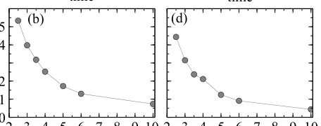
<figcaption class="paper-figure-caption"><b>Fig 5.</b> Fig. 4(a). We also observe faster-than-logarithmic growth of ξd in our numerics. However, this behavior appears only on the ergodic side of the crossover at lower potential strengths, as shown in Appendix B. This comparison indicates that faster-than-logarithmic growth reflects globally ergodic dynamics in our model, rather than being a necessary signature of avalanche proliferation within the localized regime. The correlation length ξd can be related to the LIOM localization length, as pointed in Ref. [35]. As discussed in Sec. III, the LIOM inside the initially localized part of the system that is ∆x sites away from the bath, decays after a time t∆x ∝exp(2∆x/ξ). Taking the distance ∆x to...</figcaption>
</figure>
</div>

<p><strong>Summary.</strong> The paper examines how heat spreads (thermalizes) in a localized spin chain coupled to an external bath under quasiperiodic driving. By comparing two diagnostics—correlations and entropy—the authors find that only the entropy reveals clear signs of thermal avalanches, while correlations do not. This suggests that standard theories describing such spreading must be updated to account for the unique short-range physics introduced by quasiperiodicity.</p>
<p><strong>Why it may be interesting.</strong> This work directly addresses non-equilibrium quantum dynamics in quasiperiodic systems, a key area intersecting MBL physics with open quantum system theory. The finding that different observables yield conflicting results highlights the need for careful diagnostic tools when modeling complex many-body thermalization processes.</p>
<details>
<summary>Detailed structure</summary>
<p><strong>Main problem.</strong> The study investigates bath-induced thermalization, specifically analyzing the mechanism of 'thermal avalanches' in a Many-Body Localized (MBL) system subjected to a quasiperiodic magnetic field.</p>
<p><strong>Main result.</strong> The particle-number entropy clearly shows signatures of thermal avalanches propagating into the localized subsystem, whereas two-point correlations fail to show this signature, suggesting standard avalanche theory needs revision for quasiperiodic potentials.</p>
<p><strong>Method.</strong> The analysis uses quantum simulation techniques by comparing results from two complementary observables: the two-point connected correlation function and the particle-number entropy, within an XXZ spin chain model.</p>
<p><strong>Model / system.</strong> The system is an XXZ spin chain partitioned into a localized subsystem (A) coupled to a thermal bath (B), subjected to both interacting and quasiperiodic magnetic fields. The dynamics are analyzed by engineering a thermal inclusion in the bath region.</p>
<p><strong>Key observables.</strong> Two-point connected correlation function, particle-number entropy, correlation length ($\xi_d(t)$), and entanglement entropy ($S_E$).</p>
<p><strong>Important parameters / regimes.</strong> Quasiperiodic field strength ($W_A$), weak disorder in the bath ($W_B=0.5$), and the comparison between quasiperiodic vs. random potentials.</p>
<p><strong>Assumptions / limitations.</strong> The standard avalanche theory framework is assumed to apply, but the authors argue this assumption breaks down due to short-range correlations inherent to quasiperiodic potentials.</p>
<p><strong>Figures summary.</strong> Figure 1 illustrates thermal bubble spreading, showing the localized subsystem A coupled to an ergodic bath B, with a red curve indicating the propagating thermalization front.</p>
<p><strong>Paper structure.</strong> The paper sets up the MBL system under external fields, introduces two diagnostic observables (correlations and entropy), compares their predictions regarding avalanche signatures, and concludes by proposing necessary revisions to existing theoretical frameworks based on the observed discrepancy.</p>
</details>
<details>
<summary>Abstract</summary>
<p>We study bath-induced thermalization in the many-body localized XXZ spin chain subjected to a quasiperiodic magnetic field. We engineer a thermal inclusion by setting the field strength in one part of the chain below the localization threshold and analyze thermalization via the avalanche mechanism. To study the nature of such avalanches, we use two complementary observables, namely the two-point connected correlation function and the particle-number entropy. Surprisingly, the correlations alone show no signatures of avalanches. Instead, they display a logarithmic growth of the correlation length throughout the dynamics and predict localization lengths of the local integrals of motion that remain well below the avalanche threshold. In contrast, the particle number entropy shows clear signatures of the thermal avalanche, with the avalanche front progressively propagating deeper into the localized subsystem for sufficiently large baths. The discrepancy between the two observables shows that two-point correlations are unreliable in identifying thermal avalanches in quasiperiodic systems, as opposed to the random case. On one hand, qualitative results are consistent with the analytical predictions of the standard avalanche theory. On the other hand, significant quantitative deviations persist, which could be due to short-range resonances generated by the quasiperiodic potential. Our results suggest that the standard avalanche framework requires revision to account for the short-range correlations of quasiperiodic potentials.</p>
</details>
<p><sub><a href="#top">↑ back to top</a></sub></p>

<p><a id="paper-2607.22240"></a></p>
<h3 id="fermions-on-a-1d-lattice-localized-sources-and-sinks-with-dephasing"><a href="http://arxiv.org/abs/2607.22240v1">Fermions on a 1D lattice: localized sources and sinks with dephasing</a></h3>
<p><strong>Authors:</strong> Elka Bhattacharya, Sushant Saryal, Soumya Ghosh, Kabir Ramola<br>
<strong>Type:</strong> theory · <strong>Category:</strong> statistical mechanics · <strong>PDF:</strong> <a href="https://arxiv.org/pdf/2607.22240v1">https://arxiv.org/pdf/2607.22240v1</a><br>
<strong>Analysis basis:</strong> full PDF text, analyzed in chunks
<strong>Topic relevance:</strong> 🔥 <code>methods for driven-dissipative</code> <strong>4/5</strong> · 🔥 <code>non-equilibrium dynamics</code> <strong>4/5</strong> · <code>driven-dissipative phase transition</code> <strong>3/5</strong> · <code>non-equilibrium universality</code> <strong>3/5</strong> · <code>Kondo &amp; dissipative impurity</code> <strong>2/5</strong> · <code>analog quantum simulation</code> <strong>2/5</strong> · <code>scars &amp; prethermalization</code> <strong>2/5</strong> · <code>Frenkel-Kontorova</code> <strong>1/5</strong> · <code>Keldysh / 2PI / non-Gaussian methods</code> <strong>1/5</strong> · <code>correlated / nonlocal dissipation</code> <strong>1/5</strong> · <code>entanglement &amp; information structure</code> <strong>1/5</strong></p>
<div class="figure-strip-hint">↔ Scroll figures horizontally</div>
<div class="paper-figures-scroll">
<figure class="paper-figure-card">
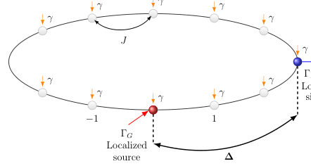
<figcaption class="paper-figure-caption"><b>Fig 1.</b> FIG. 1. Schematic illustration of the source-sink with de- phasing setup. A one-dimensional periodic lattice of size L with nearest-neighbor hopping amplitude J is coupled to a localized source at the origin and a localized sink located a distance ∆away. The source injects particles at rate ΓG, while the sink removes particles at rate ΓL. In addition, each lattice site is subjected to local dephasing with rate γ.</figcaption>
</figure>
<figure class="paper-figure-card">
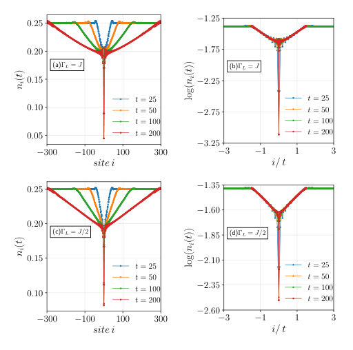
<figcaption class="paper-figure-caption"><b>Fig 2.</b> FIG. 2. Local particle density profile ni(t) obtained from Eq. (17) for a localized sink at the origin. Panels (a) and (c) show the results for ΓL = J and ΓL = J/2, respectively, with J = 1 and L = 601. The scaling plots in (b) and (d) confirm the ballistic propagation of the density perturbation.</figcaption>
</figure>
<figure class="paper-figure-card">

<figcaption class="paper-figure-caption"><b>Fig 3.</b> FIG. 3. Total particle loss rate, ∣dN/dt∣/J [Eq. (22)], as a function of time tJ for different system sizes L, with a local- ized sink at the origin (i = 0) and loss rate ΓL. The duration of the second dynamical regime scales linearly with the system size, indicating ballistic propagation of the density perturba- tion. For all curves, the initial filling is N(0)/L = 0.25, and ΓL/J = 1.</figcaption>
</figure>
<figure class="paper-figure-card">
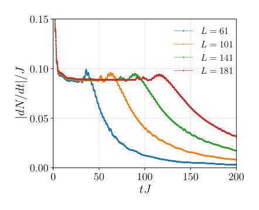
<figcaption class="paper-figure-caption"><b>Fig 4.</b> Figure 3 shows the total particle loss rate, ∣dN/dt∣/J, as a function of the dimensionless time tJ. Here, both the particle loss rate and time are scaled by the hopping amplitude J, the intrinsic energy scale of the system, to yield dimensionless quantities. The loss-rate curves exhibit three distinct dynamical regimes: (i) At very short times, the loss rate decreases rapidly due to local particle depletion in the vicinity of the sink. (ii) This is followed by a regime in which the loss rate remains nearly constant, during which the perturbation generated by the sink propagates ballisti- cally through the system. Consequently, the duration of this regime scales linearly with system size, as...</figcaption>
</figure>
<figure class="paper-figure-card">
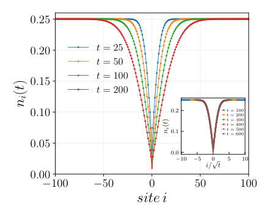
<figcaption class="paper-figure-caption"><b>Fig 5.</b> FIG. 4. Local particle density profiles ni(t) [Eq. (30)] at different times for a system of size L = 201, with a localized sink at the origin (i = 0), loss rate ΓL, and dephasing rate γ. The inset shows the same data plotted against the scaled coordinate i/ √</figcaption>
</figure>
</div>

<p><strong>Summary.</strong> The paper analyzes particle transport on a 1D fermionic lattice subjected to localized sources/sinks and bulk dephasing. It demonstrates that dephasing suppresses quantum coherence signatures like Friedel oscillations and simplifies the system's complex dynamics from three distinct regimes down to two, ultimately leading to classical diffusive behavior.</p>
<p><strong>Why it may be interesting.</strong> This work provides a detailed theoretical understanding of how environmental coupling (dephasing) fundamentally alters quantum transport phenomena, offering insights applicable to open quantum systems in condensed matter physics.</p>
<details>
<summary>Detailed structure</summary>
<p><strong>Main problem.</strong> The study investigates particle transport dynamics, thermalization, and coherence decay in open quantum systems modeled on a 1D lattice.</p>
<p><strong>Main result.</strong> Bulk dephasing suppresses coherent features like Friedel oscillations and reduces the system's dynamical regimes from three to two, driving the behavior towards a classical diffusive limit.</p>
<p><strong>Method.</strong> The time evolution is calculated using the Lindblad master equation framework, analyzing two-point correlation functions via matrix exponentiation of superoperators.</p>
<p><strong>Model / system.</strong> The model is a one-dimensional spinless fermionic system on a lattice governed by a tight-binding Hamiltonian. The dynamics are open, incorporating localized sources/sinks and bulk dephasing ($\gamma$) via the Lindblad master equation.</p>
<p><strong>Key observables.</strong> Local density profile ($n_i(t)$), two-point correlation functions ($C_{i,j}(t)$), Friedel oscillations, and particle loss rate ($|dN/dt|$).</p>
<p><strong>Important parameters / regimes.</strong> Dephasing rate ($\gamma$), source/sink rates ($\Gamma_G, \Gamma_L$), lattice hopping ($J$), and separation distance ($\Delta$). Key regimes include coherent ($\gamma=0$) vs. dephased ($\gamma>0$) transport.</p>
<p><strong>Assumptions / limitations.</strong> The system is treated within the Lindblad framework; calculations often utilize approximations like the adiabatic limit or focus on specific correlation function evolutions.</p>
<p><strong>Figures summary.</strong> Figures illustrate density profiles showing ballistic spreading and secondary peaks (coherent case), and subsequent collapse onto universal curves when dephasing drives the system into a diffusive regime. Loss rate plots show crossovers between three and two distinct dynamical regimes.</p>
<p><strong>Paper structure.</strong> The paper analyzes the evolution of correlation functions using the Lindblad master equation, contrasting the coherent limit (showing multiple dynamic regimes) with the presence of dephasing noise, which simplifies the dynamics to fewer regimes and diffusive scaling.</p>
</details>
<details>
<summary>Abstract</summary>
<p>We study a general one-dimensional spinless fermionic system subject to a localized source, sink, and bulk dephasing. Within the Lindblad framework, we compute the time evolution of the density profile and spatial correlation functions. We find that the presence of bulk dephasing suppresses certain coherent quantum features, such as the Friedel oscillations, and it alters the transport dynamics to exhibit two distinct dynamical regimes instead of three as observed in the absence of dephasing. This effect can be understood as the destruction of ballistic motion caused by the dephasing noise. Under strong dephasing, the density profile becomes similar to the one expected for a classical diffusive regime. We also investigate the system in the presence of both a localized source and sink, placed at a distance of $Δ$. Interestingly, quantum coherence generates secondary density peaks at integer multiples of the source-sink separation $Δ$, which are systematically washed out as bulk dephasing drives the system toward the classical diffusive limit.</p>
</details>
<p><sub><a href="#top">↑ back to top</a></sub></p>

<p><a id="paper-2607.22466"></a></p>
<h3 id="multiplexed-storage-and-interaction-of-rydberg-spinwaves-via-the-gradient-echo-memory-protocol"><a href="http://arxiv.org/abs/2607.22466v1">Multiplexed storage and interaction of Rydberg spinwaves via the gradient echo memory protocol</a></h3>
<p><strong>Authors:</strong> Bartosz Niewelt, Stanisław Kurzyna, Bartosz Kasza, Wojciech Wasilewski, Michał Parniak<br>
<strong>Type:</strong> both · <strong>Category:</strong> other · <strong>PDF:</strong> <a href="https://arxiv.org/pdf/2607.22466v1">https://arxiv.org/pdf/2607.22466v1</a><br>
<strong>Analysis basis:</strong> full PDF text, analyzed in chunks
<strong>Topic relevance:</strong> 🔥 <code>Rydberg arrays</code> <strong>4/5</strong> · <code>analog quantum simulation</code> <strong>3/5</strong> · <code>exotic spin models in light-matter</code> <strong>3/5</strong> · <code>QC/QI experiment</code> <strong>2/5</strong> · <code>methods for driven-dissipative</code> <strong>2/5</strong> · <code>non-equilibrium dynamics</code> <strong>2/5</strong> · <code>quantum optics experiment</code> <strong>2/5</strong> · <code>Keldysh / 2PI / non-Gaussian methods</code> <strong>1/5</strong> · <code>correlated / nonlocal dissipation</code> <strong>1/5</strong> · <code>correlated cavity matter</code> <strong>1/5</strong> · <code>driven-dissipative phase transition</code> <strong>1/5</strong> · <code>entanglement &amp; information structure</code> <strong>1/5</strong> · <code>interference shaping light</code> <strong>1/5</strong></p>
<div class="figure-strip-hint">↔ Scroll figures horizontally</div>
<div class="paper-figures-scroll">
<figure class="paper-figure-card">
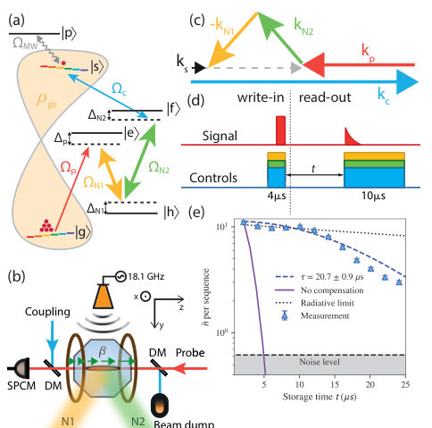
<figcaption class="paper-figure-caption"><b>Fig 1.</b> Figure 1: (a) Energy levels structure of 87Rb relevant in the experiment for the Rydberg GEM interface, (b) Simplified scheme of the experimental setup for storing Rydberg co- herence in the GEM. (c) Geometrical representation of the beams’ wavevectors used to instantaneously create the spin- wave with reduced wavevector. Grey dashed arrow represents uncompensated spinwave wavevector ks in a typical ladder- type scheme. (d) Simplified sequence for the lifetime ex- tension protocol. All of the controls (N1, N2, coupling) are enabled at the same time. (e) Experimental data for the life- time extension protocol. Blue triangles represent the number of readout photons collected with SPCM, while...</figcaption>
</figure>
<figure class="paper-figure-card">
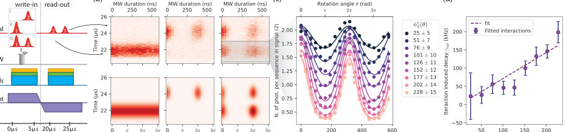
<figcaption class="paper-figure-caption"><b>Fig 2.</b> Figure 2: Controlled attenuation of the readout for different rotation angles θ and different numbers of control excitations ¯n1. (a) Simplified sequence for the Rydberg interaction-controlled Rabi oscillation. (b) Upper row: experimental data for the ¯nr 2 = 228 initial number of Rydberg excitations, lower row: Numerical simulations. The columns correspond to I: only the signal pulse (2nd) is stored; II: only the gating pulse (1st) is stored and, by means of MW rotation, is distributed between states |s⟩and |p⟩in the ratio cos2 θ to sin2 θ. III: both pulses are stored. Due to the dipolar Rydberg interactions, the atoms in |p⟩induce dephasing of the stored signal pulse. (c) The number of...</figcaption>
</figure>
<figure class="paper-figure-card">
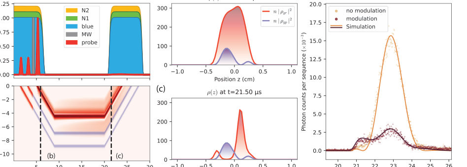
<figcaption class="paper-figure-caption"><b>Fig 3.</b> Figure 3: Interaction-induced diffraction. (a) Sequence of operations (upper plot) and the simulation of the memory contents, i.e., stored spinwaves as a colormap of the Fourier transform along the z-axis (lower plot). Red map represents coherence ρgs, and the purple map corresponds to ρgp. (b),(c) Simulated amplitudes of the stored atomic coherences as a function of the position along the atomic ensemble right after the storage of the signal and right before the readout. During the storage (from t = 6 µs to t = 20 µs), the dipolar interactions between the Rydberg atoms disturb the spinwave coherence in regions where both |s⟩and |p⟩overlap, reducing the readout from those positions. The...</figcaption>
</figure>
</div>

<p><strong>Summary.</strong> The paper overcomes a major hurdle in using Rydberg spinwaves for quantum memory by introducing a specialized four-photon addressing scheme that minimizes momentum transfer. This technique extends the coherence time significantly, allowing for the storage and manipulation of long-lived excitations within multimode quantum memories compatible with Gradient Echo Memory protocols.</p>
<p><strong>Why it may be interesting.</strong> This work directly tackles the intersection of advanced quantum memory techniques (GEM) with highly interacting Rydberg systems, providing crucial engineering solutions to overcome fundamental decoherence limits in quantum networking architectures.</p>
<details>
<summary>Detailed structure</summary>
<p><strong>Main problem.</strong> The primary challenge addressed is integrating Rydberg spinwave storage/interaction with multiplexing schemes like Gradient Echo Memory (GEM), which is typically limited by rapid motional dephasing due to large wavevectors.</p>
<p><strong>Main result.</strong> A novel four-photon addressing scheme generates collective Rydberg excitations with near-zero momentum transfer, extending the spinwave lifetime significantly and reestablishing compatibility between Rydberg excitations and GEM protocols for multimode quantum memory.</p>
<p><strong>Method.</strong> The authors propose a specific multi-photon interfacing scheme using off-resonant driving fields at a magic angle to create a closed wavevector loop, enabling long-lived storage.</p>
<p><strong>Model / system.</strong> The system uses neutral atoms (e.g., Rb-87) excited to Rydberg states. The physics is modeled by solving coupled propagation equations for the probe pulse Rabi frequency and atomic coherence, incorporating interaction-induced decay terms.</p>
<p><strong>Key observables.</strong> Rydberg spinwave lifetime ($   au$), signal decay curves, and controlled attenuation between stored excitation modes.</p>
<p><strong>Important parameters / regimes.</strong> Near-zero momentum transfer ($\mathbf{k}_s \approx 0$), magic angle configuration, and the ability to manage inhomogeneous broadening from GEM.</p>
<p><strong>Assumptions / limitations.</strong> The derivation relies on adiabatic elimination and approximations for pulse propagation in the semi-classical Hamiltonian framework. The initial problem assumes motional dephasing limits storage time.</p>
<p><strong>Figures summary.</strong> Figure 1 illustrates the energy level structure, the experimental setup geometry forming a closed wavevector loop, the lifetime extension protocol sequence, and comparative decay data showing the extended coherence time.</p>
<p><strong>Paper structure.</strong> The paper progresses from identifying the decoherence limitation in multiplexed Rydberg spinwave storage to proposing a novel four-photon interface. It then details the theoretical modeling using propagation equations and concludes by demonstrating the capability for long-lived, controllable multimode quantum memory operations.</p>
</details>
<details>
<summary>Abstract</summary>
<p>Collective Rydberg excitations offer strong and controllable interactions for quantum information processing, sensing, and nonlinear quantum optics, but their integration with temporally or spectrally multiplexed schemes, such as the Gradient Echo Memory (GEM) protocol, is hindered by rapid motional dephasing caused by the large spinwave wavevector. We demonstrate a new type of multi-photon addressing and interfacing scheme (with levels following the shape of the letter Ń) that allows us to generate collective Rydberg excitations with near-zero momentum transfer, extending the Rydberg spinwave lifetime almost tenfold. The scheme relies on two additional off-resonant driving fields arranged at a magic angle, forming a closed wavevector loop while remaining compatible with GEM-induced inhomogeneous broadening. This enables storage and manipulation of long-lived Rydberg spinwaves in a multimode quantum memory. Using microwave coupling between neighboring Rydberg states, we can control the attenuation between stored excitation modes by interaction-induced decay and demonstrate interaction-controlled diffraction of a retrieved optical signal. Our results reestablish compatibility between Rydberg excitations and GEM, providing a route toward multimode quantum memories with controllable long-range interactions and applications in quantum networking, sensing, and quantum information processing.</p>
</details>
<p><sub><a href="#top">↑ back to top</a></sub></p>

<p><a id="paper-2607.22203"></a></p>
<h3 id="an-experimental-scheme-for-testing-molecular-rectification-with-only-micrometer-scale-fabrication-requirements"><a href="http://arxiv.org/abs/2607.22203v1">An Experimental Scheme for Testing Molecular Rectification with Only Micrometer-Scale Fabrication Requirements</a></h3>
<p><strong>Authors:</strong> Jiantang Jiang<br>
<strong>Type:</strong> both · <strong>Category:</strong> statistical mechanics · <strong>PDF:</strong> <a href="https://arxiv.org/pdf/2607.22203v1">https://arxiv.org/pdf/2607.22203v1</a><br>
<strong>Analysis basis:</strong> full PDF text, analyzed in chunks
<strong>Topic relevance:</strong> 🔥 <code>non-equilibrium dynamics</code> <strong>4/5</strong> · <code>driven-dissipative phase transition</code> <strong>3/5</strong> · <code>methods for driven-dissipative</code> <strong>3/5</strong> · <code>non-equilibrium universality</code> <strong>3/5</strong> · <code>Keldysh / 2PI / non-Gaussian methods</code> <strong>2/5</strong> · <code>analog quantum simulation</code> <strong>2/5</strong> · <code>correlated / nonlocal dissipation</code> <strong>2/5</strong> · <code>Kondo &amp; dissipative impurity</code> <strong>1/5</strong> · <code>entanglement &amp; information structure</code> <strong>1/5</strong> · <code>scars &amp; prethermalization</code> <strong>1/5</strong></p>
<div class="figure-strip-hint">↔ Scroll figures horizontally</div>
<div class="paper-figures-scroll">
<figure class="paper-figure-card">
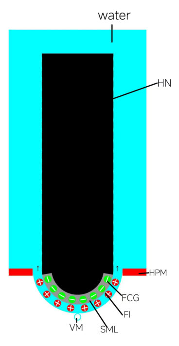
<figcaption class="paper-figure-caption"><b>Fig 1.</b> Fig.2. Interface A deformed by the needle tip. HPM: hy- drophobic porous membrane; HN: hydrophilic needle; FCG: fixed charged groups; FI: free ions; SML: surface modification layer; VM: vapor molecule.</figcaption>
</figure>
<figure class="paper-figure-card">
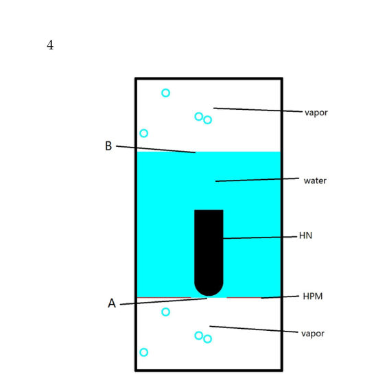
<figcaption class="paper-figure-caption"><b>Fig 2.</b> Fig.3. Schematic illustration of the apparatus used to mea- sure the effect of needle pressure on vapor pressure. HPM: hydrophobic porous membrane; HN: hydrophilic needle.</figcaption>
</figure>
</div>

<p><strong>Summary.</strong> This work proposes a significantly simplified experimental setup to test a theory of molecular rectification—the directed flow of molecules without external energy. By using a hydrophilic needle on a porous membrane, the authors can create and maintain an ionic concentration gradient at micrometer scales. This greatly lowers the technical barrier for experimentally validating this non-equilibrium transport mechanism.</p>
<p><strong>Why it may be interesting.</strong> While focused on classical thermodynamics and transport, the underlying principles of non-equilibrium steady states driven by interfacial energy minimization are highly relevant to open quantum systems modeling, particularly those involving dissipation or boundary effects.</p>
<details>
<summary>Detailed structure</summary>
<p><strong>Main problem.</strong> The paper addresses the experimental verification of a theoretical model predicting sustained directed transport (molecular rectification) without external energy input.</p>
<p><strong>Main result.</strong> A simplified, micrometer-scale experimental design is proposed that can sustain a measurable concentration difference and confirm the predicted directed flow cycle by observing steady liquid levels or pressure differences.</p>
<p><strong>Method.</strong> The authors combine theoretical derivations based on chemical potential, Laplace's equation, and osmotic equilibrium with proposals for novel, low-complexity microfluidic/interfacial experiments.</p>
<p><strong>Model / system.</strong> The system involves a hydrophobic porous membrane separating two liquid-vapor interfaces. Directed transport is driven by maintaining an ionic concentration gradient ($    ext{C}_a -  ext{C}_b$) using a hydrophilic needle tip to locally modify the interface, analogous to semipermeable membranes.</p>
<p><strong>Key observables.</strong> Sustained directed flow (steady state), measurable pressure differences ($P_n$ and $P_d$), and liquid-level differences ($   ext{A}_1$ vs $  ext{B}_1$).</p>
<p><strong>Important parameters / regimes.</strong> Fabrication scale reduced to micrometer level; theoretical maximum pressures up to 288,000 Pa for water.</p>
<p><strong>Assumptions / limitations.</strong> Assumes the charged groups act like a semipermeable membrane and employs ideal dilute solution approximations ($\pi = CRT$).</p>
<p><strong>Figures summary.</strong> Figures illustrate the schematic setup using a porous membrane and needle tip (Fig. 1, Fig. 3), showing interface deformation and ion release. Supplementary figures detail MD simulations of directed flux ($ ext{NNWM}$) and alternative experimental configurations.</p>
<p><strong>Paper structure.</strong> The paper progresses from establishing the theoretical basis for rectification via concentration gradients to proposing a simplified, low-complexity experimental platform using micrometer fabrication requirements, supported by both analytical derivations and simulation results.</p>
</details>
<details>
<summary>Abstract</summary>
<p>In our previous work, we proposed a theoretical model capable of inducing sustained directed transport without consuming information or external energy. However, the experimental verification schemes proposed previously were technically challenging, and the model has therefore not yet been experimentally tested. In this work, we propose a greatly simplified experimental design. By introducing hydrophilic functional groups onto the tip of a gold needle through surface modification and pressing the needle against one of two liquid-vapor interfaces, the compressed interface is maintained at a higher ionic concentration than the other interface, thereby sustaining a concentration difference between them. This design reduces the fabrication requirement from the nanometer scale to the micrometer scale, substantially lowering experimental complexity and facilitating experimental examination of the proposed mechanism.</p>
</details>
<p><sub><a href="#top">↑ back to top</a></sub></p>

<p><a id="paper-2607.22283"></a></p>
<h3 id="when-can-a-cavity-move-a-mott-transition-a-spectral-density-criterion-within-gutzwiller-theory"><a href="http://arxiv.org/abs/2607.22283v1">When Can a Cavity Move a Mott Transition? A Spectral-Density Criterion within Gutzwiller Theory</a></h3>
<p><strong>Authors:</strong> Nikhil Vamsodharakan Seshadri, Yu Zhang<br>
<strong>Type:</strong> theory · <strong>Category:</strong> strongly correlated electrons · <strong>PDF:</strong> <a href="https://arxiv.org/pdf/2607.22283v1">https://arxiv.org/pdf/2607.22283v1</a><br>
<strong>Analysis basis:</strong> full PDF text, analyzed in chunks
<strong>Topic relevance:</strong> 🔥 <code>analog quantum simulation</code> <strong>4/5</strong> · 🔥 <code>correlated cavity matter</code> <strong>4/5</strong> · <code>Keldysh / 2PI / non-Gaussian methods</code> <strong>3/5</strong> · <code>driven-dissipative phase transition</code> <strong>3/5</strong> · <code>Tavis-Cummings &amp; cavity-many-emitter</code> <strong>2/5</strong> · <code>methods for driven-dissipative</code> <strong>2/5</strong> · <code>correlated / nonlocal dissipation</code> <strong>1/5</strong> · <code>exotic spin models in light-matter</code> <strong>1/5</strong> · <code>non-equilibrium dynamics</code> <strong>1/5</strong> · <code>non-equilibrium universality</code> <strong>1/5</strong></p>
<div class="figure-strip-hint">↔ Scroll figures horizontally</div>
<div class="paper-figures-scroll">
<figure class="paper-figure-card">
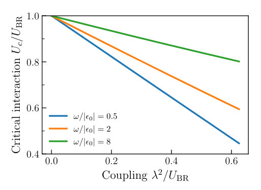
<figcaption class="paper-figure-caption"><b>Fig 1.</b> FIG. 1. Cavity-induced displacement of the Brinkman–Rice boundary. Solutions of Eq. 6 for νm = r = 1 show that the same gauge-complete coupling lowers Uc through a residual self- polarization penalty for slow modes and bandwidth narrowing for fast modes. Here UBR = 8A0 is the Brinkman–Rice critical interaction in the absence of light–matter coupling.</figcaption>
</figure>
<figure class="paper-figure-card">
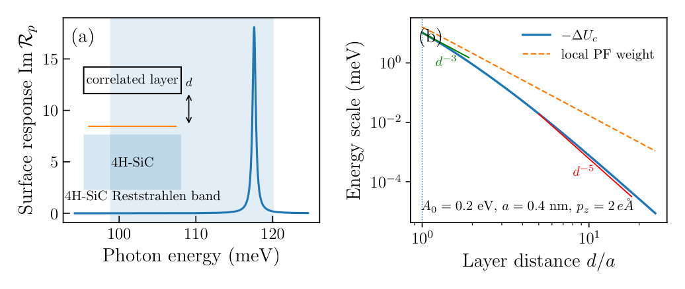
<figcaption class="paper-figure-caption"><b>Fig 2.</b> FIG. 2. Bond-scale field variation controls the surface-polariton shift. (a) Geometry and surface response of 4H-SiC. (b) Cavity-induced shift of the Mott boundary and total local Pauli–Fierz weight versus layer–surface distance. Although the local near-field weight grows as d decreases, only its bond-projected component shifts Uc, producing a crossover from d−3 to d−5. Parameters are given in the panel.</figcaption>
</figure>
<figure class="paper-figure-card">
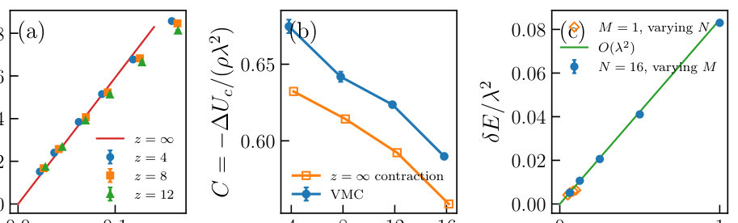
<figcaption class="paper-figure-caption"><b>Fig 3.</b> FIG. 3. Finite-coordination validation of the spectral-density criterion. (a) Weak-coupling cavity energy density versus measured double occupancy; its D →0 slope determines the shift of the Mott boundary. (b) The VMC coefficient on N = 24 random regular graphs agrees with the infinite-coordination prediction within 5–7%; error bars include graph-to-graph fluctuations. (c) Separate variation of M and N confirms δe ∝M/N and the vanishing 1/N contribution of a single normalized mode.</figcaption>
</figure>
</div>

<p><strong>Summary.</strong> The paper develops a criterion within Gutzwiller theory to determine when vacuum electromagnetic fluctuations can shift a Mott insulator transition. The key finding is that this requires the environment to provide finite, spatially varying spectral weight across the electronic hopping bonds. This bridges concepts from quantum optics and strongly correlated materials physics.</p>
<p><strong>Why it may be interesting.</strong> This work provides a rigorous, quantitative link between quantum electrodynamics (vacuum fluctuations) and strongly correlated electron physics. It establishes that simple local density of states is insufficient; the spatial structure of the field coupling to electronic bonds dictates the phase transition outcome.</p>
<details>
<summary>Detailed structure</summary>
<p><strong>Main problem.</strong> The study determines the precise criterion by which vacuum electromagnetic fluctuations, such as those from a cavity or surface plasmons, can induce a shift in a bulk Mott metal-insulator transition.</p>
<p><strong>Main result.</strong> A Mott transition shifts only if the coupling environment supplies finite thermodynamic spectral weight that varies spatially across the electronic hopping bonds. The magnitude of this shift depends on the joint frequency-spatial Pauli-Fierz density.</p>
<p><strong>Method.</strong> The analysis employs the Gutzwiller variational method, deriving a critical criterion using the joint frequency–spatial Pauli–Fierz density ($J_{PF}$). This is complemented by Variational Monte Carlo (VMC) simulations for finite coordination systems.</p>
<p><strong>Model / system.</strong> The system is modeled as a half-filled Hubbard model coupled to normalized electromagnetic modes or planar phonon-polariton surfaces. The Hamiltonian includes hopping, on-site repulsion ($U$), and the coupling term derived from the cavity environment.</p>
<p><strong>Key observables.</strong> Mott boundary shift ($\Delta U_c$); Joint frequency–spatial Pauli–Fierz density ($J_{PF}$); Critical coefficient for phase boundary shift.</p>
<p><strong>Important parameters / regimes.</strong> Bond-scale variation of spectral weight; Distance scaling ($d^{-3}$ to $d^{-5}$ crossover); Thermodynamic weight ($\eta_\alpha$).</p>
<p><strong>Assumptions / limitations.</strong> The analysis relies on Gutzwiller variational approximations, often assuming infinite coordination or using first-order expansions in mode density.</p>
<p><strong>Figures summary.</strong> Figures illustrate the cavity-induced displacement of the Brinkman–Rice boundary and show that only the bond-projected component of the local near-field weight drives the Mott transition shift, causing a crossover in scaling behavior.</p>
<p><strong>Paper structure.</strong> The paper develops the criterion by analyzing the coupling Hamiltonian using Gutzwiller theory. It derives the leading shift formula based on $J_{PF}$, applies this to specific environments (like surface polaritons), and validates the results using VMC simulations for finite lattices.</p>
</details>
<details>
<summary>Abstract</summary>
<p>Can vacuum electromagnetic fluctuations shift a bulk Mott transition? Within the Gutzwiller variational method, we derive a criterion that separates collective spectroscopic hybridization from thermodynamic phase control. We show that a Mott transition shifts only when the electromagnetic environment supplies finite thermodynamic spectral weight with bond-scale variation. A joint frequency--spatial Pauli--Fierz density gives the leading shift. Surface phonon polaritons yield a $d^{-3}$-to-$d^{-5}$ crossover, while finite-coordination variational Monte Carlo supports the predicted critical coefficient and $M/N$ scaling.</p>
</details>
<p><sub><a href="#top">↑ back to top</a></sub></p>

<p><a id="paper-2607.22521"></a></p>
<h3 id="critical-sensing-with-autonomous-devices-the-self-oscillation-threshold-of-a-frequency-locked-nv-centre-magnetometer"><a href="http://arxiv.org/abs/2607.22521v1">Critical Sensing with Autonomous Devices: The Self-Oscillation Threshold of a Frequency-Locked NV-Centre Magnetometer</a></h3>
<p><strong>Authors:</strong> Joan Toledo Aguilera, Gonzalo Reina Rivero, Marcel Morillas-Rozas, Javier Cerrillo<br>
<strong>Type:</strong> experiment · <strong>Category:</strong> other · <strong>PDF:</strong> <a href="https://arxiv.org/pdf/2607.22521v1">https://arxiv.org/pdf/2607.22521v1</a><br>
<strong>Analysis basis:</strong> full PDF text, analyzed in chunks
<strong>Topic relevance:</strong> 🔥 <code>driven-dissipative phase transition</code> <strong>4/5</strong> · <code>methods for driven-dissipative</code> <strong>3/5</strong> · <code>non-equilibrium universality</code> <strong>3/5</strong> · <code>quantum measurements</code> <strong>3/5</strong> · <code>spintronics-quantum-optics interface</code> <strong>3/5</strong> · <code>non-equilibrium dynamics</code> <strong>2/5</strong> · <code>QC/QI experiment</code> <strong>1/5</strong> · <code>measurement-induced transitions</code> <strong>1/5</strong></p>
<div class="figure-strip-hint">↔ Scroll figures horizontally</div>
<div class="paper-figures-scroll">
<figure class="paper-figure-card">
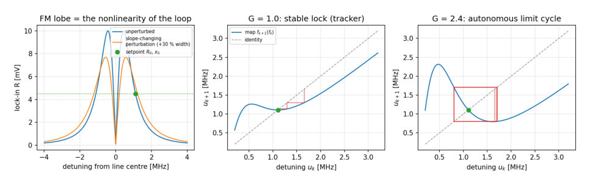
<figcaption class="paper-figure-caption"><b>Fig 1.</b> FIG. 1. The lock as a dynamical system (simulation with rig-like parameters). Left: the FM lock-in lobe R(f) is the nonlinearity of the map; the working point sits on a flank. Middle and right: cobweb diagrams of Eq. (1) below threshold (stable lock, G = 1) and above threshold (G = 2.4), where the orbit settles on a period-2 limit cycle.</figcaption>
</figure>
<figure class="paper-figure-card">
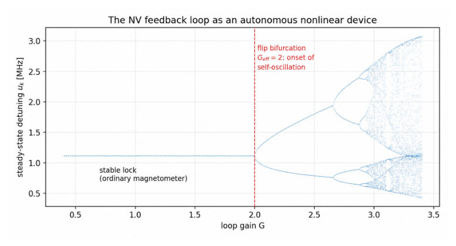
<figcaption class="paper-figure-caption"><b>Fig 2.</b> FIG. 2. Simulated bifurcation diagram of the loop (noise-free): steady-state orbit versus gain. The flip bifurcation at Geff = 2 separates the stable lock from the period-2 self-oscillation, followed by the period-doubling cascade.</figcaption>
</figure>
<figure class="paper-figure-card">
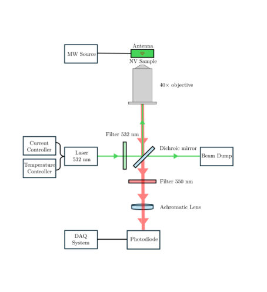
<figcaption class="paper-figure-caption"><b>Fig 3.</b> FIG. 3. Schematic of the continuous-wave ODMR mag- netometer used in this work.</figcaption>
</figure>
<figure class="paper-figure-card">

<figcaption class="paper-figure-caption"><b>Fig 4.</b> Figure 4 summarizes the measurements. Three observations quantitatively support the dynamical model: The coherent period-2 amplitude a2 is flat at 12– 19 kHz for G ≤1.4 and jumps to 48–97 kHz for G ≳ 1.8, with the crossing estimator giving Gc = 2.0 ± 0.1. Because this run was self-calibrated (Dtrue ≈</figcaption>
</figure>
<figure class="paper-figure-card">
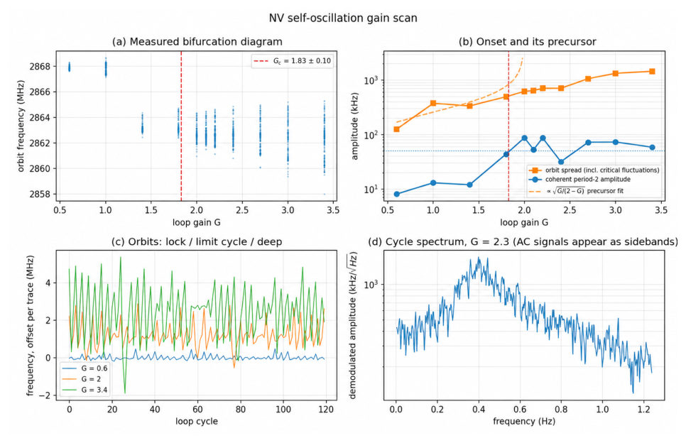
<figcaption class="paper-figure-caption"><b>Fig 5.</b> FIG. 4. Measured loop dynamics (gain scan, 250 cycles per gain; statistics run of 4000 cycles at G = 2.3). (a) Orbit frequencies versus gain: the experimental bifurcation diagram. (b) Orbit spread (orange) and coherent period-2 amplitude a2 (blue) versus gain; the spread grows below threshold in qualitative agreement with Eq. (6), while a2 steps up by a factor ≈4 across G ≈1.8–2.2, consistent with the parameter-free prediction Gc = 2 for a self-calibrated loop. (c) Example orbits below, near and above threshold. (d) Spectrum of the demodulated cycle from the statistics run.</figcaption>
</figure>
</div>

<p><strong>Summary.</strong> The researchers studied a frequency-locked NV magnetometer by intentionally driving its feedback loop past its stable operational point. They modeled this using a discrete map exhibiting a period-doubling bifurcation, predicting an oscillation onset at $G_c=2$. Experimentally, they confirmed this transition, demonstrating the system's ability to self-oscillate and characterizing the approach to this critical threshold.</p>
<p><strong>Why it may be interesting.</strong> This work provides an excellent example of using nonlinear dynamics (bifurcation theory) to characterize and control a quantum sensor's operating regime, moving beyond simple linear sensing modes into controlled non-equilibrium dynamics.</p>
<details>
<summary>Detailed structure</summary>
<p><strong>Main problem.</strong> The study investigates autonomous self-oscillating behavior in a frequency-locked Nitrogen-Vacancy (NV) centre magnetometer by deliberately operating the lock outside its stable regime.</p>
<p><strong>Main result.</strong> The experiment successfully confirmed the theoretical prediction that the onset of self-oscillation occurs at a critical gain $G_c \approx 2.0$, validating the model's description of the flip bifurcation in the feedback loop.</p>
<p><strong>Method.</strong> The authors employed continuous measurements on an NV magnetometer, analyzing the system dynamics by driving the frequency lock through a period-doubling (flip) bifurcation using software control.</p>
<p><strong>Model / system.</strong> The physical platform is a Continuous-Wave ODMR ensemble magnetometer. The operation is modeled as a one-dimensional discrete map whose stability and bifurcations are controlled by adjusting the dimensionless loop gain $G$.</p>
<p><strong>Key observables.</strong> Coherent period-2 amplitude ($a_2$), sub-threshold orbit spread ($\sigma_f(G)$), and the critical gain threshold ($G_c$).</p>
<p><strong>Important parameters / regimes.</strong> Loop gain ($G$), calibration slope ($D_{	ext{cal}}$), true operating slope ($D_{	ext{true}}$), and the bifurcation point $G_c$.</p>
<p><strong>Assumptions / limitations.</strong> The nonlinearity is implemented in software after digitization, which limits its metrological advantage compared to physical nonlinearities.</p>
<p><strong>Figures summary.</strong> Figures summarize measurements showing the jump in coherent period-2 amplitude ($a_2$) around $G \approx 1.8-2.2$, and the divergence of the orbit spread following the predicted $\propto 1/(2 - G)$ trend.</p>
<p><strong>Paper structure.</strong> The paper establishes the theoretical model based on a discrete map, derives the critical threshold condition ($G_c$), performs identifiability analysis, and concludes with experimental measurements confirming the bifurcation onset and divergence behavior.</p>
</details>
<details>
<summary>Abstract</summary>
<p>Feedback locking of a probe frequency to a spin resonance is the standard operating mode of precision quantum sensors. Here we deliberately operate such a lock outside its stable regime: a continuous-wave nitrogen-vacancy (NV) ensemble magnetometer, frequency-modulation (FM) locked to one flank of its optically detected magnetic resonance (ODMR), is driven through the flip (period-doubling) bifurcation of its discrete feedback map by raising the software loop gain $G$. Beyond a critical gain $\Gc$ the lock becomes a self-sustained oscillator whose limit cycle is generated by the loop itself. We derive the threshold condition $\Gc = 2\,\Dcal/\Dtrue$, which identifies the measurable content of the threshold: the ratio of the transduction slope of the ODMR lock-in signal at calibration time $D_{cal}$ to its value at present $D_{true}$. We present an identifiability analysis showing which physical parameters this single scalar can and cannot distinguish, characterize the estimators of $\Gc$ under realistic noise, and report measurements on our current setup: an experimental bifurcation diagram with onset at $\Gc \approx 2$ as predicted for a self-calibrated loop, sub-threshold critical fluctuations following the predicted $\sqrt{G/(2-G)}$ divergence.</p>
</details>
<p><sub><a href="#top">↑ back to top</a></sub></p>

<p><a id="paper-2607.22340"></a></p>
<h3 id="fluctuational-quantum-electrodynamics-of-dispersive-time-varying-media"><a href="http://arxiv.org/abs/2607.22340v1">Fluctuational Quantum Electrodynamics of Dispersive Time-Varying Media</a></h3>
<p><strong>Authors:</strong> Jaime E. Sustaeta-Osuna, Thomas F. Allard, Francisco J. García-Vidal, Paloma A. Huidobro<br>
<strong>Type:</strong> theory · <strong>Category:</strong> other · <strong>PDF:</strong> <a href="https://arxiv.org/pdf/2607.22340v1">https://arxiv.org/pdf/2607.22340v1</a><br>
<strong>Analysis basis:</strong> full PDF text, analyzed in chunks
<strong>Topic relevance:</strong> 🔥 <code>Keldysh / 2PI / non-Gaussian methods</code> <strong>4/5</strong> · <code>correlated / nonlocal dissipation</code> <strong>3/5</strong> · <code>driven-dissipative phase transition</code> <strong>3/5</strong> · <code>methods for driven-dissipative</code> <strong>3/5</strong> · <code>non-equilibrium dynamics</code> <strong>3/5</strong> · <code>non-equilibrium universality</code> <strong>2/5</strong> · <code>correlated cavity matter</code> <strong>1/5</strong> · <code>interference shaping light</code> <strong>1/5</strong></p>
<div class="figure-strip-hint">↔ Scroll figures horizontally</div>
<div class="paper-figures-scroll">
<figure class="paper-figure-card">
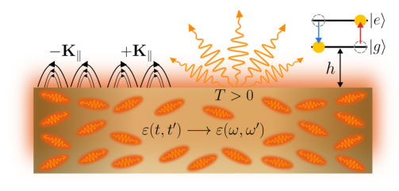
<figcaption class="paper-figure-caption"><b>Fig 1.</b> FIG. 1: Diagram of a frequency-dispersive, dissipative and time-modulated half-space. The time modulation breaks time-translational symmetry, leading to a two- frequency permittivity in the Fourier-domain. Owing to losses and by virtue of the fluctuation-dissipation the- orem, the medium supports fluctuating currents, which emit thermal radiation for T &gt; 0. For large modula- tion frequencies, the time modulation generates entan- gled pairs of polaritons with opposite lateral momenta ±K∥. Finally, a probe quantum emitter is placed at a height h above the surface; owing to the time modula- tion, the emitter experiences both loss (spontaneous de- cay) and gain (spontaneous excitation).</figcaption>
</figure>
<figure class="paper-figure-card">
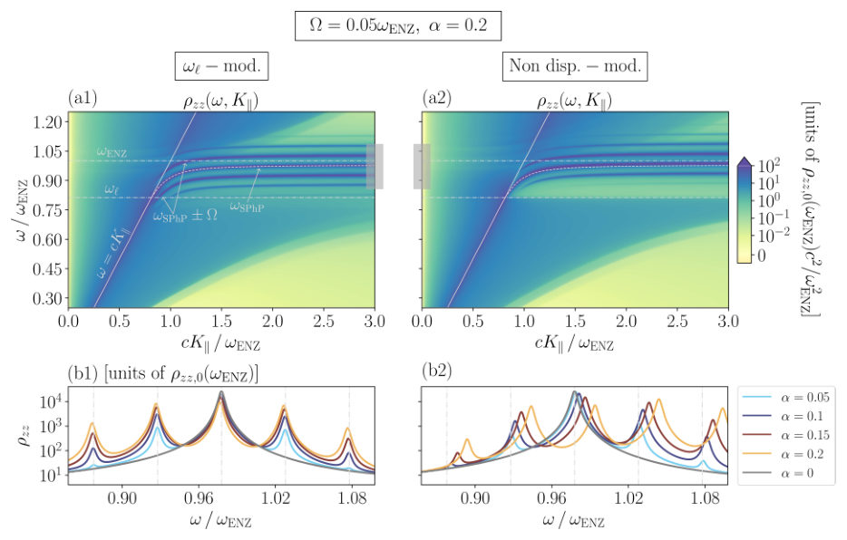
<figcaption class="paper-figure-caption"><b>Fig 2.</b> FIG. 2: LDOS for slowly driven polar insulator half-space. (a1)-(a2) Momentum-resolved z-projected LDOS for a time-modulated SiC half-space; units of ρzz,0(ωENZ)c2/ω2 ENZ, where ρzz,0(ω) = ω2/(3π2c3) is the free-space z- projected LDOS at a frequency ω. Vertical axis is the frequency (normalized to ωENZ) and horizontal axis is the lateral momentum (normalized to ωENZ/c). In (a1) it is the Lorentz frequency ωℓwhich is modulated in time, leading to a dispersive temporal modulation, whereas in (a2) the temporal modulation is non-dispersive. Furthermore, in (a1) the modulation strength is set to α = 0.2, while in (a2) it is αnd = 17.3α = 3.46. (b1) Total z-projected LDOS [units of ρzz,0(ωENZ)]...</figcaption>
</figure>
<figure class="paper-figure-card">

<figcaption class="paper-figure-caption"><b>Fig 3.</b> FIG. 3: LDOS for fast driven plasmonic half-space. (a1)-(a2) Momentum-resolved z-projected LDOS for a time- modulated ITO half-space vs frequency and lateral momentum. In (a1) it is the plasma frequency ωp which is modulated in time, whereas in (a2) the modulation is non-dispersive, similar to Fig. 2(a2). On the other hand, in (a1) the modulation strength is α = 0.3, while in (a2) it is αnd = 1.5. Blue regions in the plot have positive LDOS and are associated to loss. Conversely, red regions correspond to a negative LDOS and are thus a signature of gain. (b1)-(b2) Maximum eigenvalue in modulus of the scattered Green’s dyadic for TM-polarized waves vs imaginary part of the frequency and...</figcaption>
</figure>
<figure class="paper-figure-card">

<figcaption class="paper-figure-caption"><b>Fig 4.</b> FIG. 4: Thermal radiation in a time-modulated polar insulator. The panels show the spectral density S [nor- malized to the black-body spectral density evaluated at ωENZ, Sbb(ωENZ)] vs frequency for a SiC half-space with a periodically time-varying Lorentz frequency. We consider values different values of α and compare with Planck’s law (red line) as well. On the other hand, we study different values of the height above the surface, h = 0.01λENZ(a), 0.05λENZ(b), 0.1λENZ(c), 10λENZ(d). Finally, the modulation frequency is set to Ω= 0.05ωENZ and the polar insulator is initially (prior to the start of the temporal modulation) in a thermal state with temperature T = 300K.</figcaption>
</figure>
<figure class="paper-figure-card">

<figcaption class="paper-figure-caption"><b>Fig 5.</b> FIG. 5: Dynamical Casimir effect in a time-modulated plasmonic medium. The panels show the first order correlation functions of the electric field generated by an ITO half-space with periodically time-varying plasma frequency. (a1)- (a2) Polariton-conserving correlation functions (normalized to Γzz,0) vs the lateral separation between points R (normalized to λENZ). The solid blue line and the red dashed line are Γzz and G(1) zz , respectively, while the grey line is Γzz,α=0. (b1)-(b2) Real (maroon) and imaginary (pink) parts of Γ(2) zz , the two-polariton absorption correlation function. In (a1)-(b1) the modulation strength is α = 0.2, for which the system is stable, whereas in (a2)-(b2) it...</figcaption>
</figure>
</div>

<p><strong>Summary.</strong> This paper develops a comprehensive theoretical framework for Quantum Electrodynamics in dispersive, dissipative, and time-varying materials. It establishes a generalized fluctuation-dissipation theorem applicable to non-equilibrium systems by treating temporal modulation exactly. The results demonstrate that accurately modeling dispersion and losses is critical for predicting phenomena like enhanced thermal emission and the dynamical Casimir effect.</p>
<p><strong>Why it may be interesting.</strong> This work is highly relevant as it extends quantum electrodynamics into complex, realistic open quantum systems. The exact treatment of dispersion and dissipation in time-varying media provides powerful tools for understanding light-matter interaction dynamics beyond simple weak-coupling approximations.</p>
<details>
<summary>Detailed structure</summary>
<p><strong>Main problem.</strong> Developing a rigorous theoretical framework for fluctuational quantum electrodynamics (QED) when applied to time-varying media that exhibit both frequency dispersion and dissipation.</p>
<p><strong>Main result.</strong> The theory successfully derives a generalized Fermi Golden Rule applicable to non-equilibrium, time-modulated systems, showing that treating dispersion and losses exactly is crucial for accurate predictions of thermal emission and vacuum fluctuations.</p>
<p><strong>Method.</strong> The authors utilize Kubo's linear response theory extended to time-modulated media, employing the Green's dyadic formalism in the frequency domain to handle dispersive and dissipative effects non-perturbatively.</p>
<p><strong>Model / system.</strong> The system is a macroscopic dielectric body (e.g., SiC half-space) whose optical properties are modulated periodically in time. The theory models the interaction between the electromagnetic field and the material polarization density $P(r, t)$.</p>
<p><strong>Key observables.</strong> Local Density of States (LDOS), spectral density of thermal radiation, correlation functions of the electric field, and entangled polariton pairs.</p>
<p><strong>Important parameters / regimes.</strong> Modulation strength ($\alpha$), modulation frequency ($\Omega$), temperature ($T$), and material dispersion/loss parameters ($\epsilon(\omega)$).</p>
<p><strong>Assumptions / limitations.</strong> The analysis assumes linearity for the media; key advancements overcome limitations of previous work that treated modulation perturbatively or assumed lossless behavior.</p>
<p><strong>Figures summary.</strong> Figures illustrate spectral density vs. frequency comparisons, contrasting results from non-dispersive versus dispersive time modulation in a SiC half-space, and showing sideband structures related to phonon frequencies.</p>
<p><strong>Paper structure.</strong> The paper progresses by first establishing the generalized fluctuation-dissipation theorem for time-modulated systems (Chunk 1 &amp; 2). It then applies this formalism to calculate the spectral density of thermal emission, explicitly comparing the necessity of including dispersion versus assuming non-dispersive modulation (Chunk 3). Finally, it analyzes the temperature dependence and low-temperature limit of these fluctuations (Chunk 4).</p>
</details>
<details>
<summary>Abstract</summary>
<p>We present the theoretical framework of fluctuational quantum electrodynamics in frequency-dispersive and dissipative time-varying media. Our theory accounts for dispersion and losses in the temporal modulation, which is treated in an exact manner, without relying on perturbative methods. Thus, our work constitutes the first consistent quantization of the electromagnetic field in time-modulated material bodies. We derive a Fermi Golden Rule for time-varying media and use it to define the local density of states for these time-dependent systems, which includes both loss and gain contributions. Additionally, we prove the equivalence between the quantum Fermi Golden Rule and the power emitted by a classical harmonic point dipole. Moreover, we show that neglecting the dispersive and dissipative nature of the time modulation leads to erroneous predictions for both slow and fast modulations. Furthermore, we analyze the thermal radiation emitted by a time-varying material body, revealing new features in the enhancement of thermal emission in time-varying media. Finally, we study the dynamical Casimir effect, showing how the time modulation amplifies vacuum fluctuations and generates entangled pairs of polaritons exhibiting non-local spatial correlations.</p>
</details>
<p><sub><a href="#top">↑ back to top</a></sub></p>

<p><a id="paper-2607.21734"></a></p>
<h3 id="page-transition-for-the-complexity-of-an-evaporating-black-hole"><a href="http://arxiv.org/abs/2607.21734v1">Page transition for the complexity of an evaporating black hole</a></h3>
<p><strong>Authors:</strong> Violet Concepcion, Yasunori Nomura, Kyle Ritchie, Samuel Weiss<br>
<strong>Type:</strong> theory · <strong>Category:</strong> other · <strong>PDF:</strong> <a href="https://arxiv.org/pdf/2607.21734v1">https://arxiv.org/pdf/2607.21734v1</a><br>
<strong>Analysis basis:</strong> full PDF text, analyzed in chunks
<strong>Topic relevance:</strong> 🔥 <code>entanglement &amp; information structure</code> <strong>4/5</strong> · <code>driven-dissipative phase transition</code> <strong>3/5</strong> · <code>non-equilibrium dynamics</code> <strong>3/5</strong> · <code>Keldysh / 2PI / non-Gaussian methods</code> <strong>2/5</strong> · <code>non-equilibrium universality</code> <strong>2/5</strong> · <code>correlated / nonlocal dissipation</code> <strong>1/5</strong> · <code>measurement-induced transitions</code> <strong>1/5</strong> · <code>methods for driven-dissipative</code> <strong>1/5</strong> · <code>scars &amp; prethermalization</code> <strong>1/5</strong></p>
<div class="figure-strip-hint">↔ Scroll figures horizontally</div>
<div class="paper-figures-scroll">
<figure class="paper-figure-card">

<figcaption class="paper-figure-caption"><b>Fig 1.</b> Figure 1: (a) We sketch the maximal volume slices associated with the boundary at a given time in the AdS/Schwarzschild Penrose diagram. Before the Page time, we have the light red slices which go through the interior of the black hole. The blue slices end on the edge of the island, since they are the maximal volume slices through the entanglement wedge of the CFT living on the boundary, which no longer includes the island. At late times, the dark blue slices represent the post-black hole near-flat maximal volume slices. (b) We depict the value of the volume qualitatively. It increases at a rate proportional to M 2 until the time the island forms, at which point the volume drops...</figcaption>
</figure>
<figure class="paper-figure-card">

<figcaption class="paper-figure-caption"><b>Fig 2.</b> Figure 2: Before the Page time tPage, the entanglement wedge e(R) of the bath system is the bath itself. The entanglement wedge e(B) of the CFT (living on the AdS bound- ary) at time t1 &lt; tPage is the region in AdSd that can be reached from the equal-time hypersurface of the boundary at t1.</figcaption>
</figure>
<figure class="paper-figure-card">

<figcaption class="paper-figure-caption"><b>Fig 3.</b> Figure 3: After the Page time, the bath’s entanglement wedge (pink) now includes the black hole interior. The entanglement wedge of the CFT degrees of freedom (blue) extends to the black hole exterior.</figcaption>
</figure>
<figure class="paper-figure-card">

<figcaption class="paper-figure-caption"><b>Fig 4.</b> Figure 4: A time dependent quantum circuit as a set of N qubits. Every ∆t we act on the circuit with an operator H which consists of a product of p-gates, acting nonlocally.</figcaption>
</figure>
<figure class="paper-figure-card">

<figcaption class="paper-figure-caption"><b>Fig 5.</b> Figure 5: A time dependent quantum circuit that more closely resembles a system undergoing evaporation. Since the black hole is a fast scrambler, we see rapid interac- tions modeled such that an operator H consisting of a product of p-gates acts on the circuit in every time interval ∆t. We also have a bath system in which no interactions occur, and no gates are used. Every ∆t we remove one qubit from the circuit to this bath system.</figcaption>
</figure>
</div>

<p><strong>Summary.</strong> This theoretical work applies concepts from quantum complexity theory to black hole evaporation within the AdS/CFT framework. It predicts that holographic complexity exhibits a Page-like transition when the radiation subsystem grows past half its size. This transition is attributed to an 'island' region, suggesting this mechanism resolves a deep paradox analogous to the information loss problem.</p>
<p><strong>Why it may be interesting.</strong> While focused on gravity/QFT, the core methodology—analyzing how information measures (complexity) undergo sharp transitions based on subsystem size relative to a critical point—is highly relevant to understanding non-equilibrium dynamics in open quantum systems.</p>
<details>
<summary>Detailed structure</summary>
<p><strong>Main problem.</strong> The paper investigates whether a Page-like transition occurs for the holographic complexity of subsystems during black hole evaporation, analogous to the resolution of the information paradox.</p>
<p><strong>Main result.</strong> A Page-like transition is predicted in the radiation complexity due to the emergence of an 'island' contribution when using the Complexity=Volume (CV) proposal, which resolves a complexity paradox similar to the information paradox.</p>
<p><strong>Method.</strong> The authors employ quantum information tools like basis-spectrum decomposition and holographic complexity calculations, comparing them against circuit models for subsystem complexity.</p>
<p><strong>Model / system.</strong> The system modeled is an evaporating Anti-de Sitter (AdS) black hole coupled to a bath, analyzed using concepts from AdS/CFT correspondence and quantum circuits representing the interior dynamics.</p>
<p><strong>Key observables.</strong> Subsystem complexity (general and holographic), radiation complexity, and the volume contribution of the 'island' region.</p>
<p><strong>Important parameters / regimes.</strong> The subsystem size relative to half ($  ext{size} &gt; 1/2$), and the time evolution across the Page time.</p>
<p><strong>Assumptions / limitations.</strong> The analysis relies on the Complexity=Volume (CV) proposal for subregions, and models black hole evaporation via random circuit evolution on an interior subsystem.</p>
<p><strong>Figures summary.</strong> Figures sketch maximal volume slices in AdS/Schwarzschild diagrams showing how the island forms post-Page time, causing a dramatic change in the calculated volume contribution.</p>
<p><strong>Paper structure.</strong> The paper builds from established results on complexity transitions for random states to applying these concepts to the holographic complexity of an evaporating black hole, culminating in the prediction and interpretation of the Page-like transition via the island structure.</p>
</details>
<details>
<summary>Abstract</summary>
<p>Recent results demonstrate that there exists a sharp, Page-like transition for the complexity of subsystems of Haar-random states as their fractional subsystem size surpasses one half. They further demonstrate that this transition also occurs for the holographic complexity of boundary subregions of eternal AdS black holes, assuming the Complexity$=$Volume (CV) proposal for subregions. We interpret this transition as a crossover from spectrum-dominated to basis-dominated subsystem complexity, reflecting the breakdown of approximate thermality beyond half-system size. We then apply this reasoning to an evaporating AdS black hole coupled to a bath, modeled by a quantum circuit undergoing random evolution on an interior subsystem of diminishing size. Using the basis-spectrum decomposition of subsystem complexity, we argue for a similar Page-like transition in the radiation complexity. We then show, using CV for subregions, that the same transition appears in the holographic complexity of the radiation subsystem through the emergence of an island, whose volume gives the dominant contribution. We argue that the island volume contribution resolves an apparent complexity paradox analogous to the information paradox.</p>
</details>
<p><sub><a href="#top">↑ back to top</a></sub></p>

<p><a id="paper-2607.21905"></a></p>
<h3 id="quantum-advantage-of-nonlinear-quantum-battery-and-superconducting-circuit-implementation"><a href="http://arxiv.org/abs/2607.21905v1">Quantum advantage of nonlinear quantum battery and superconducting circuit implementation</a></h3>
<p><strong>Authors:</strong> Wei-Jun Han, Peng-Yu Sun, Guo-Feng Zhang<br>
<strong>Type:</strong> both · <strong>Category:</strong> other · <strong>PDF:</strong> <a href="https://arxiv.org/pdf/2607.21905v1">https://arxiv.org/pdf/2607.21905v1</a><br>
<strong>Analysis basis:</strong> full PDF text, analyzed in chunks
<strong>Topic relevance:</strong> 🔥 <code>QC/QI experiment</code> <strong>4/5</strong> · <code>correlated cavity matter</code> <strong>3/5</strong> · <code>quantum optics experiment</code> <strong>3/5</strong> · <code>analog quantum simulation</code> <strong>2/5</strong> · <code>quantum measurements</code> <strong>2/5</strong> · <code>Tavis-Cummings &amp; cavity-many-emitter</code> <strong>1/5</strong> · <code>driven-dissipative phase transition</code> <strong>1/5</strong> · <code>methods for driven-dissipative</code> <strong>1/5</strong> · <code>non-equilibrium dynamics</code> <strong>1/5</strong></p>
<div class="figure-strip-hint">↔ Scroll figures horizontally</div>
<div class="paper-figures-scroll">
<figure class="paper-figure-card">

<figcaption class="paper-figure-caption"><b>Fig 1.</b> FIG.1. Schematic of the optical-field-dependent nonlinear quantum battery model, where the optical cavity acts as</figcaption>
</figure>
<figure class="paper-figure-card">

<figcaption class="paper-figure-caption"><b>Fig 2.</b> FIG. 2. Schematic diagram of the energy exchange between the charger and the quantum battery, where 𝑔 is the</figcaption>
</figure>
<figure class="paper-figure-card">

<figcaption class="paper-figure-caption"><b>Fig 3.</b> FIG. 6. For the resonant case Δ = 0, performance of the O-NQB for different photon numbers, (a) Time evolution</figcaption>
</figure>
<figure class="paper-figure-card">

<figcaption class="paper-figure-caption"><b>Fig 4.</b> Fig. 7 details how detuning Δ affects Δ𝐸(𝑡𝑓) , showing that with detuning present, maximum</figcaption>
</figure>
<figure class="paper-figure-card">

<figcaption class="paper-figure-caption"><b>Fig 5.</b> FIG. 7. Effect of detuning Δ and coupling constant 𝑔 on the maximum stored energy Δ𝐸(𝑡𝑓) of the O-NQB for</figcaption>
</figure>
</div>

<p><strong>Summary.</strong> The paper introduces an Optical-Field-Dependent Nonlinear Quantum Battery model that predicts a superlinear advantage in charging power due to multiphoton absorption. It provides both the rigorous theoretical derivation and a detailed experimental blueprint using superconducting circuits, successfully demonstrating that the achievable charging time saturates the fundamental quantum speed limit.</p>
<p><strong>Why it may be interesting.</strong> This work directly bridges advanced quantum optics theory (nonlinear cavity QED, multiphoton effects) with cutting-edge solid-state hardware (superconducting qubits), providing concrete pathways to realizing enhanced energy storage devices based on fundamental quantum mechanics principles.</p>
<details>
<summary>Detailed structure</summary>
<p><strong>Main problem.</strong> To enhance the charging performance of quantum batteries (QBs) by developing a theoretical model for an optical-field-dependent nonlinear quantum battery and demonstrating its feasibility in superconducting circuits.</p>
<p><strong>Main result.</strong> The proposed Nonlinear Quantum Battery exhibits a superlinear quantum advantage in charging power, confirming that this enhancement stems from multiphoton absorption effects. Furthermore, the experimental design successfully verifies that the charging time saturates the theoretical Quantum Speed Limit (QSL).</p>
<p><strong>Method.</strong> Theoretical analysis involves deriving an unbiased nonlinear interaction function by comparing energy metrics and QSL benchmarks; experimentally, it uses dispersive readout on superconducting circuits to measure charging time.</p>
<p><strong>Model / system.</strong> The system is modeled as an Optical-Field-Dependent Nonlinear Quantum Battery (O-NQB) comprising a two-level atom coupled to an optical cavity. The physical realization utilizes superconducting quantum circuits with tunable Josephson junctions, allowing precise control over the coupling strength and resonance conditions.</p>
<p><strong>Key observables.</strong> Stored energy ($\Delta E(t)$), average charging power ($\langle P(t) 
angle$), charging time ($t_f$), and relative entropy of coherence ($C_{	ext{rel}}(
ho)$).</p>
<p><strong>Important parameters / regimes.</strong> Nonlinearity order $k\geq2$, multiphoton absorption number $n$ (tunable in the range 2 to 6), detuning ($\Delta$), and coupling strength ($g$).</p>
<p><strong>Assumptions / limitations.</strong> The derivation relies on establishing an unbiased benchmark by equating QSL times across different models, eliminating arbitrary parameter tuning.</p>
<p><strong>Figures summary.</strong> Figures illustrate the schematic of the O-NQB model, energy exchange dynamics in nonlinear QBs, and time evolution plots showing coherence decay and energy accumulation under varying detunings.</p>
<p><strong>Paper structure.</strong> The paper progresses from theoretical modeling (deriving the Hamiltonian and finding the unbiased nonlinearity) to quantitative analysis (comparing charging metrics against the QSL benchmark), culminating in a detailed experimental design scheme using superconducting circuits for verification.</p>
</details>
<details>
<summary>Abstract</summary>
<p>A quantum battery is a novel energy storage device that operates on the principles of quantum mechanics. To enhance the charging performance of quantum batteries and further provide theoretical support for their physical implementation, we constructed an optical-field-dependent nonlinear quantum battery model. Meanwhile, we solved for the unbiased form of nonlinear interactions in this model, where the charging power of the proposed model exhibits a superlinear quantum advantage, and the charging time saturates the quantum speed limit. Through theoretical analysis, we confirm that this quantum advantage arises from the quantum effect of multiphoton absorption. Subsequently, with the derived nonlinear function form, we further investigated other properties of this nonlinear quantum battery. Finally, an experimental design scheme for this nonlinear quantum battery in superconducting quantum circuits is presented.</p>
</details>
<p><sub><a href="#top">↑ back to top</a></sub></p>

<p><a id="paper-2607.21743"></a></p>
<h3 id="deleterious-effect-of-photon-phonon-coupling-on-microcavities-in-their-application-as-quantum-sources"><a href="http://arxiv.org/abs/2607.21743v1">Deleterious effect of photon-phonon coupling on microcavities in their application as quantum sources</a></h3>
<p><strong>Authors:</strong> Y. Sacha C. L. S., G. C. Rickli, J. Dipold, R. A. Kögler, Paulo Nussenzveig, Nathália B. Tomazio, M. Martinelli<br>
<strong>Type:</strong> experiment · <strong>Category:</strong> quantum information and computing · <strong>PDF:</strong> <a href="https://arxiv.org/pdf/2607.21743v1">https://arxiv.org/pdf/2607.21743v1</a><br>
<strong>Analysis basis:</strong> full PDF text, analyzed in chunks
<strong>Topic relevance:</strong> 🔥 <code>quantum optics experiment</code> <strong>4/5</strong> · <code>Keldysh / 2PI / non-Gaussian methods</code> <strong>2/5</strong> · <code>analog quantum simulation</code> <strong>2/5</strong> · <code>correlated / nonlocal dissipation</code> <strong>2/5</strong> · <code>methods for driven-dissipative</code> <strong>2/5</strong> · <code>QC/QI experiment</code> <strong>1/5</strong> · <code>correlated cavity matter</code> <strong>1/5</strong> · <code>driven-dissipative phase transition</code> <strong>1/5</strong> · <code>entanglement &amp; information structure</code> <strong>1/5</strong> · <code>non-equilibrium dynamics</code> <strong>1/5</strong></p>
<div class="figure-strip-hint">↔ Scroll figures horizontally</div>
<div class="paper-figures-scroll">
<figure class="paper-figure-card">

<figcaption class="paper-figure-caption"><b>Fig 1.</b> Figure 1. Diagram of the complete measurement setup. The shaded area indicates the portion of the system not utilized in this work, since all measurements are performed below the OPO’s oscillation threshold and therefore do not produce a nonzero average beam pair for detection.</figcaption>
</figure>
<figure class="paper-figure-card">

<figcaption class="paper-figure-caption"><b>Fig 2.</b> Figure 2. Spectral noise for a scanning detection cavity. The transmitted signal is used to calibrate the detuning, normalized here by the half bandwidth at half maximum. Noise power has the electronic noise subtracted and is normalized to the standard quan- tum limit by the shot noise level measurement. The continuous line is the adjustment of Equation 18. Analysis frequency of 20 MHz, cavity bandwidth of 4 MHz.</figcaption>
</figure>
<figure class="paper-figure-card">

<figcaption class="paper-figure-caption"><b>Fig 3.</b> Figure 3. Diagram of the part of the setup that constitutes the Mach-Zehnder interfer- ometer (a) and pictures of the chip taken with a near-infrared camera. Micro-ring (b) has a height of 390 𝜇m and a width of 540 𝜇m. The white pads are contacts of the platinum wire. Once the contacts run a current, the cavity can be tuned into resonance (c), and some scattering from the surface of the waveguide can be observed. The inter- action length between the bus waveguide and the cavity waveguide is about 200 𝜇m.</figcaption>
</figure>
<figure class="paper-figure-card">

<figcaption class="paper-figure-caption"><b>Fig 4.</b> Figure 4. Graphs of the reflected amplitude for the different cavity coupling regimes. In the graphs on the top row, you can see the complex amplitude response of the reflected field in each coupling regime, where the y-axis represents the imaginary component and the x-axis the real component. In the graphs in the bottom row, the actual char- acterizations of the coupling regime show phase inversions in the overcoupled case when depletion crosses the dashed red line. The blue and orange curves represent the normalized detector signals, while the green curve shows their difference, rescaled for visibility. These coupling regimes were all made in the same cavity, which is typically...</figcaption>
</figure>
<figure class="paper-figure-card">

<figcaption class="paper-figure-caption"><b>Fig 5.</b> Figure 5. Graphs of the estimated coupling and spurious losses. The First column presents the coupling losses, and the second column presents the spurious losses. As one can see by the graphs, in all cases the coupling regimes were overcoupled since the coupling losses were always bigger than the spurious ones.</figcaption>
</figure>
</div>

<p><strong>Summary.</strong> This paper experimentally characterizes the detrimental effect of photon-phonon coupling on microcavities intended for quantum state generation. By measuring excess phase noise as a function of temperature, the authors confirm that this noise originates from thermal acoustic fluctuations within the crystal lattice. The findings emphasize that controlling this environmental coupling is a necessary prerequisite for utilizing these cavities in robust quantum information applications.</p>
<p><strong>Why it may be interesting.</strong> This work directly addresses decoherence mechanisms (phonon coupling) in solid-state photonic platforms used for generating entangled states, which is a core challenge in practical quantum networking and quantum optics.</p>
<details>
<summary>Detailed structure</summary>
<p><strong>Main problem.</strong> The study investigates how photon-phonon coupling introduces excess noise into microcavities, thereby degrading their performance when used as sources for quantum states.</p>
<p><strong>Main result.</strong> The observed excess noise is confirmed to be phononic in nature and its temperature dependence allows for the quantification of the coupling rate. Controlling this source of environmental noise is crucial for implementing these devices in quantum networks.</p>
<p><strong>Method.</strong> The authors analyzed the spectral covariance matrix of the output field, measuring excess phase noise as a function of temperature across different resonant conditions.</p>
<p><strong>Model / system.</strong> The physical system involves $  ext{Si}_3   ext{N}_4$ micro-cavities coupled to a thermal phonon reservoir. The analysis uses input-output formalism and Langevin equations to model the field dynamics, incorporating noise terms from acoustic fluctuations.</p>
<p><strong>Key observables.</strong> Excess phase noise power ratio ($\eta$), spectral covariance matrix components ($V(\Omega)$), and temperature coefficients of loss ($\delta\eta/\delta T$).</p>
<p><strong>Important parameters / regimes.</strong> Temperature dependence ($T$) and driving field power ($P$); the coupling rate was estimated to be proportional to $TP$.</p>
<p><strong>Assumptions / limitations.</strong> Key assumptions include treating the phonon reservoir as unaffected by the electromagnetic field, ignoring parametric processes below threshold, and simplifying acoustic correlation functions.</p>
<p><strong>Figures summary.</strong> Figures show spectral matrix components measurements for multiple cavities under different resonance conditions ($R1$ and $R2$), illustrating noise power ratios versus temperature dependence.</p>
<p><strong>Paper structure.</strong> The paper progresses from establishing the theoretical framework using input-output formalism to measuring excess noise, quantifying its temperature dependence across two distinct resonant conditions, and concluding with recommendations for noise mitigation in quantum network applications.</p>
</details>
<details>
<summary>Abstract</summary>
<p>In quantum systems, the contact with the environment is detrimental to the purity of the state, thus limiting the practical use of entangled sources in quantum information applications. This loss of purity is observed in the form of additional noise in the tomography of the state. We investigate this noise dependence in $Si_3N_4$ micro-cavities, previously used for quantum state generation, and demonstrate that the dependence of this noise on the temperature is compatible with a coupling of the photonic chips to a thermal reservoir. The control of this noise source is a necessary condition for the efficient implementation of these devices as sources of entangled states in quantum networks.</p>
</details>
<p><sub><a href="#top">↑ back to top</a></sub></p>

<p><a id="paper-2607.22527"></a></p>
<h3 id="effective-field-theories-of-nonlinear-fluctuating-hydrodynamics-in-one-dimension"><a href="http://arxiv.org/abs/2607.22527v1">Effective field theories of nonlinear fluctuating hydrodynamics in one dimension</a></h3>
<p><strong>Authors:</strong> Matija Koterle, Enej Ilievski<br>
<strong>Type:</strong> theory · <strong>Category:</strong> statistical mechanics · <strong>PDF:</strong> <a href="https://arxiv.org/pdf/2607.22527v1">https://arxiv.org/pdf/2607.22527v1</a><br>
<strong>Analysis basis:</strong> full PDF text, analyzed in chunks
<strong>Topic relevance:</strong> 🔥 <code>non-equilibrium dynamics</code> <strong>4/5</strong> · <code>methods for driven-dissipative</code> <strong>3/5</strong> · <code>non-equilibrium universality</code> <strong>3/5</strong> · <code>driven-dissipative phase transition</code> <strong>2/5</strong> · <code>Frenkel-Kontorova</code> <strong>1/5</strong> · <code>Keldysh / 2PI / non-Gaussian methods</code> <strong>1/5</strong> · <code>correlated / nonlocal dissipation</code> <strong>1/5</strong></p>
<div class="figure-strip-hint">↔ Scroll figures horizontally</div>
<div class="paper-figures-scroll">
<figure class="paper-figure-card">

<figcaption class="paper-figure-caption"><b>Fig 1.</b> FIG. 1. Diagonal structure factors in a minimal model of a two-component nonlinear EFT. Time evolution of Sa(x, t) in the minimal model (cf. Eqs. (14), (15) and (16)) with bare parameters c = 0.5, λ = 1.0, χ = 0.1 and κ = 1.0. Gray dashed lines indicate the bare characteris- tics v♭t with v♭= ±c, while blue dotted lines trace the ac- tual peak trajectories vat propagating with dressed velocities (v1 ≈−0.234, v2 ≈0.650). Insets demonstrate collapse of the rescaled structure factors Sa(ξa, t) ≡t1/zaSa (ξa, t), with scaling variables ξa(x, t) ≡t−1/za(x −vat). (a) Mode 1 ex- hibits superdiffusive broadening with z1 = 3/2. (b) Mode 2 exhibits diffusive transport with z2 = 2 and a Gaussian...</figcaption>
</figure>
<figure class="paper-figure-card">

<figcaption class="paper-figure-caption"><b>Fig 2.</b> FIG. 2. Decay of diagonal structure factors and run- ning exponents. The decay of the peaks of diagonal struc- ture factors Sa(vat, t) in the minimal model. The dashed lines show the expected asymptotic decay rates t−1/z for z ∈{3/2, 2}. In the inset we show time-resolved dynami- cal exponents za(t) = −[dlog Sa(vat, t)/d logt]−1 which shows that mode 1 is superdiffusive with limt→∞z1(t) ≈3/2, while mode 2 clearly converges to the expected value z2 = 2. Pa- rameters of simulation: N = L = 8192, ∆t = 0.04, number of samples 2 × 104.</figcaption>
</figure>
<figure class="paper-figure-card">

<figcaption class="paper-figure-caption"><b>Fig 3.</b> FIG. 3. Stationarity of a Gaussian equilibrium state Peq under dynamics in the cyclic test model. The left panel shows evolution of C (2) which preserves contact form, while the right panel shows the dynamics of equal-time correlators M(n)(t) which evidently fluctuate around expected equilibrium values that are denoted by dashed lines (determined analytically). Simulation parameters: ∆t = 0.04, number of samples 1000, N = 128.</figcaption>
</figure>
<figure class="paper-figure-card">

<figcaption class="paper-figure-caption"><b>Fig 4.</b> FIG. 4. Dynamical generation of nonzero cumulants M(n&gt;2) under dynamics with a non-cyclic Hessian. The equal-time correlators M(n)(t) are evaluated in equilibrium with an increasing number of samples. The Gaussian prediction limt→∞Mab = δab and limt→∞M(n&gt;2) = 0 are broken. Simulation parameters: ∆t = 0.04, N = 128.</figcaption>
</figure>
<figure class="paper-figure-card">

<figcaption class="paper-figure-caption"><b>Fig 5.</b> FIG. 5. Stability of the cyclic (left panel) and the consistent (right panel) numerical schemes. The panels show maxx ψ1(x, t) averaged over 100 initial conditions as a function of time for increasing ∆t. The legend denotes the used timestep ∆t and the fraction of trajectories that exhibited instability maxx ψ1(x, t) &gt; 106. The consistent scheme stabilizes the dynamics to a large degree. Parameters: N = 128, c = 0.3, κ = 2, number of samples 100.</figcaption>
</figure>
</div>

<p><strong>Summary.</strong> This paper develops a systematic effective field theory framework for nonlinear fluctuating hydrodynamics in 1D systems. It overcomes limitations of previous models by enforcing key thermodynamic symmetries like the Maxwell relation through a master potential. The work successfully predicts superdiffusive transport regimes and provides robust numerical methods for non-Gaussian equilibrium states.</p>
<p><strong>Why it may be interesting.</strong> It provides rigorous theoretical tools for describing non-equilibrium dynamics in low dimensions where simple perturbative methods fail, connecting macroscopic hydrodynamics directly to fundamental thermodynamic symmetries.</p>
<details>
<summary>Detailed structure</summary>
<p><strong>Main problem.</strong> Developing a general and systematic effective field theory approach for nonlinear fluctuating hydrodynamics in one dimension that rigorously respects fundamental symmetry constraints of local equilibrium states.</p>
<p><strong>Main result.</strong> The authors successfully construct EFTs by introducing a master potential that manifestly enforces the Maxwell relation, demonstrating superdiffusive transport ($z=3/2$) alongside diffusive modes in a minimal non-Gaussian model.</p>
<p><strong>Method.</strong> The work combines theoretical construction based on symmetry principles (Maxwell relation) with numerical simulations of stochastic partial differential equations (SPDEs) and advanced sampling techniques like tilted ensembles.</p>
<p><strong>Model / system.</strong> The study focuses on one-dimensional interacting systems exhibiting emergent phenomena, modeled via nonlinear fluctuating hydrodynamics described by coupled stochastic Langevin-type equations. The analysis is tested on a minimal model featuring two interacting hydrodynamic modes with a non-Gaussian stationary equilibrium measure.</p>
<p><strong>Key observables.</strong> Superdiffusive algebraic exponents ($z$), static covariance matrices ($C_{ab}$), and the preservation of symmetry relations like $B_{a|b} = B_{b|a}$.</p>
<p><strong>Important parameters / regimes.</strong> The dimensionality (one dimension) and the nature of the equilibrium measure (non-Gaussian vs. Gaussian).</p>
<p><strong>Assumptions / limitations.</strong> Previous NLFHD formulations are shown to have conceptual issues when applied to non-Gaussian measures, necessitating a symmetry-preserving EFT construction.</p>
<p><strong>Figures summary.</strong> Figures illustrate structure factors showing superdiffusive and diffusive broadening over time; other figures compare numerical sampling methods (Metropolis vs. exact) for minimal models.</p>
<p><strong>Paper structure.</strong> The paper progresses from identifying limitations in existing NLFHD/MCE approaches to developing a symmetry-enforcing EFT via a master potential, followed by applying this framework to analyze transport properties and test the numerical stability of the resulting SPDEs.</p>
</details>
<details>
<summary>Abstract</summary>
<p>Describing emergent macroscopic phenomena in low spatial dimensions is known to be notoriously challenging, primarily due to strong interactions that render perturbative approaches inapplicable. On the other hand, low-dimensional systems host a wealth of unorthodox phenomena. A prominent example is the emergence of superdiffusive transport in one-dimensional interacting systems, traditionally studied in the framework of nonlinear fluctuating hydrodynamics. After identifying and discussing internal inconsistencies in the previous formulations, in this work we develop a general and systematic approach for constructing effective field theories of one-dimensional hydrodynamic systems in the form of coupled stochastic Langevin-type equations compatible with the physical requirements of local equilibrium states such as the thermodynamic Maxwell relation and fluctuation-dissipation symmetry. We implemented a general numerical integration scheme and exemplified our construction on a simple model of two interacting hydrodynamic modes with a non-Gaussian stationary equilibrium measure.</p>
</details>
<p><sub><a href="#top">↑ back to top</a></sub></p>

<p><a id="paper-2607.22222"></a></p>
<h3 id="identifying-the-signatures-of-residual-activity-in-harmonically-bound-active-brownian-dynamics"><a href="http://arxiv.org/abs/2607.22222v1">Identifying the signatures of residual activity in harmonically bound active Brownian dynamics</a></h3>
<p><strong>Authors:</strong> Sanatan Halder, Manas Khan<br>
<strong>Type:</strong> theory · <strong>Category:</strong> statistical mechanics · <strong>PDF:</strong> <a href="https://arxiv.org/pdf/2607.22222v1">https://arxiv.org/pdf/2607.22222v1</a><br>
<strong>Analysis basis:</strong> full PDF text, analyzed in chunks
<strong>Topic relevance:</strong> 🔥 <code>non-equilibrium dynamics</code> <strong>4/5</strong> · <code>driven-dissipative phase transition</code> <strong>3/5</strong> · <code>methods for driven-dissipative</code> <strong>3/5</strong> · <code>non-equilibrium universality</code> <strong>2/5</strong> · <code>Frenkel-Kontorova</code> <strong>1/5</strong> · <code>Keldysh / 2PI / non-Gaussian methods</code> <strong>1/5</strong> · <code>correlated / nonlocal dissipation</code> <strong>1/5</strong></p>
<div class="figure-strip-hint">↔ Scroll figures horizontally</div>
<div class="paper-figures-scroll">
<figure class="paper-figure-card">

<figcaption class="paper-figure-caption"><b>Fig 1.</b> Fig. 1. An active Brownian particle (ABP) in a harmonic well (HW). (a) Schematic shows an ABP, depicted as an active Janus colloid (gray-green), in an HW with potential U = 1 2kx2 (orange curve). The corresponding restoring velocity (= −kx/γT) is shown as an open arrow. The Janus particle undergoes active propulsion with velocity V , which has a constant speed and points from the coated side (gray) to the bare side (green), making an angle ϕ with the x-axis in the x−y plane. V and its x-component V cos ϕ are represented by the solid arrows. (b) Active propulsion velocity V (solid arrows) and the restoring velocity (= −kr/γT, open arrow) are shown in the x −y plane for the initial (t = 0)...</figcaption>
</figure>
<figure class="paper-figure-card">

<figcaption class="paper-figure-caption"><b>Fig 2.</b> Fig. 2. Position distributions in regime - I, where τR ≪τk (τR/τk = 0.01; τR = 1 s, τk = 100 s). (a) Analytically predicted time evolution of P(x, t) (left) and P(y, t) (middle) for V = 10 µm s−1, displayed as color-coded curves at successive times t. The 2D steady-state distribution following Eq. 5 is shown as a density plot (right). (b) Numerically simulated position distributions at increasing times are shown in the same way. (c) Five simulated trajectories of 105 s duration, generated at 103 Hz, with propulsion speeds V varying from V = 0 (HBBP) to 10 µm s−1, are displayed in blue, orange, cyan, red, and green, respectively (top panel). The corresponding steady-state position...</figcaption>
</figure>
<figure class="paper-figure-card">

<figcaption class="paper-figure-caption"><b>Fig 3.</b> Fig. 3. Residual, i.e., resultant velocity distributions for τR ≪τk ((τR/τk = 0.01; τR = 1 s, τk = 100 s)). (a) Short segments (50 s) of the time series (left) and probability distribu- tions (right) of the radial component vr res (top) and azimuthal component vθ res (bottom), calculated from the simulated trajec- tory with V = 10 µm s−1. The dashed horizontal lines in the time series represent the respective rms values. Both P(vr res) and P(vθ res) exhibit bimodal shapes that fit well with the sum of two symmetrically positioned Gaussians (solid lines). (b, c) Probability distributions P(vr res) and P(vθ res) for three differ- ent propulsion speeds, V = 2, 5, and 10 µm s−1. The bimodal...</figcaption>
</figure>
<figure class="paper-figure-card">

<figcaption class="paper-figure-caption"><b>Fig 4.</b> Fig. 4. Mean square displacement (MSD) and power spectral density (PSD) in regime - I (τR/τk = 0.01; τR = 1 s, τk = 100 s). (a) Computed MSDs, ⟨∆r2⟩, for five propulsion speeds (V ), varying from 0 (HBBP) to 10 µm s−1, are shown with color-coded symbols consistent with the corresponding trajec- tories in Fig. 2c. The V values and respective P´eclet numbers (Pe) are specified in the inset. Fitting to the analytical solution (Eq. 12) are shown with solid black lines. The characteristic timescales τR and τk are marked with dashed and solid ver- tical lines, respectively, and the apparent slopes of 1 and 2 are indicated by short black straight lines as visual guides. (b) PSDs, computed for...</figcaption>
</figure>
<figure class="paper-figure-card">

<figcaption class="paper-figure-caption"><b>Fig 5.</b> Fig. 5. Position distributions in regime - II, where τR ≫τk (τR/τk = 100; τR = 100 s, τk = 1 s). (a) Time evolution of P(x, t) (left) and P(y, t) (middle) from analytical predictions are shown by color-coded curves for V = 10 µm s−1. The 2D position distribution P(x, y) prior to reaching the steady-state is presented as a density plot (right). (b) Position distributions obtained from the numerically simulated dynamics of an HBABP are exhibited in the same fashion as those in (a). (c) The simulated trajectories of 105 s duration, generated at 103 Hz, for five different propulsion speeds, from V = 0 (HBBP) to 10 µm s−1, are shown in blue, orange, cyan, red, and green (top). The bottom panel...</figcaption>
</figure>
</div>

<p><strong>Summary.</strong> The paper investigates how self-propelled particles confined by a harmonic potential behave under different activity levels. By analyzing multiple dynamical signatures—including MSD and PSD—the authors distinguish between regimes where residual activity dominates versus those where the activity is effectively quenched by the confining force field.</p>
<p><strong>Why it may be interesting.</strong> This work provides a rigorous, multi-diagnostic framework (beyond just distribution shape) to characterize non-equilibrium steady states in active matter systems, which is highly relevant for understanding energy dissipation and effective potentials in complex physical settings.</p>
<details>
<summary>Detailed structure</summary>
<p><strong>Main problem.</strong> The study aims to reliably identify and quantify the signature of residual or remnant activity in the dynamics of an Active Brownian Particle (ABP) confined within a harmonic potential.</p>
<p><strong>Main result.</strong> The nature of the particle's motion depends critically on the ratio between the persistence time ($    au_R$) and the confinement equilibration time ($ au_k$): $   au_R \ll    au_k$ shows residual activity signatures, while $   au_R \gg    au_k$ suggests the activity is balanced by the restoring force.</p>
<p><strong>Method.</strong> The analysis combines analytical calculations of correlation functions and position distributions with numerical simulations solving the underlying Langevin equations for the system.</p>
<p><strong>Model / system.</strong> The model describes an ABP undergoing self-propulsion ($V$) confined in 2D by a harmonic potential $U(r) = rac{1}{2}kr^2$. The dynamics are governed by coupled Langevin equations involving propulsion, confinement restoring forces, and thermal noise.</p>
<p><strong>Key observables.</strong> Position distribution ($P_{ss}(r)$), residual/resultant velocity components ($\mathbf{v}_{	ext{res}}$), Mean Square Displacement (MSD), and Power Spectral Density (PSD).</p>
<p><strong>Important parameters / regimes.</strong> Activity strength quantified by the Péclet number ($    ext{Pe}$); characteristic timescales $  au_R$ (persistence time) and $  au_k$ (confinement equilibration time).</p>
<p><strong>Assumptions / limitations.</strong> The analysis relies on examining two extreme limits ($   au_R \ll    au_k$ and $ au_R \gg    au_k$) and assumes that cross-terms involving uncorrelated Brownian velocity noises vanish.</p>
<p><strong>Figures summary.</strong> Figures illustrate position distributions ($P(x, t), P(y, t)$) and steady-state radial distributions $P_{ss}(r)$, comparing analytical predictions to simulations across different activity regimes.</p>
<p><strong>Paper structure.</strong> The paper systematically analyzes the dynamics by deriving theoretical expressions for observables (like MSD and distribution functions) in the two limiting cases ($  au_R \ll    au_k$ and $ au_R \gg    au_k$), contrasting these results with the passive Brownian counterpart ($V=0$).</p>
</details>
<details>
<summary>Abstract</summary>
<p>A confined self-propelled particle exhibits a range of intriguing dynamical phenomena dictated by the interplay between the intrinsic activity of the particle and the imposed confinement. This competition manifests as a crossover in the steady-state position distribution of a harmonically bound active Brownian particle (HBABP) from Boltzmann-like to bimodal, commonly recognized as the passive and active regimes, respectively, upon variations in activity and confinement strength. We present a comprehensive analysis of the resultant dynamics of an HBABP employing analytical calculations and numerical simulations, examining the variations in the position distribution, residual or resultant velocity, mean square displacement, power spectral density, and effective harmonic confinement at varying activities in the characteristic regimes across the crossover. These analyses provide a reliable identification of the signature of residual or remnant activity in ABP dynamics after being impeded by the harmonic confinement. Our results show that the resultant HBABP dynamics in the regime with a Boltzmann-like position distribution is dominated by residual activity, and the motion in the other regime, with a bimodal position distribution, is similar to that of a harmonically bound Brownian particle--devoid of residual activity--at a displaced position, where the activity is balanced by the restoring force field.</p>
</details>
<p><sub><a href="#top">↑ back to top</a></sub></p>

<p><a id="paper-2607.21707"></a></p>
<h3 id="resolving-topological-order-crossovers-on-nisq-hardware"><a href="http://arxiv.org/abs/2607.21707v1">Resolving topological order crossovers on NISQ hardware</a></h3>
<p><strong>Authors:</strong> Ruizhe Shen, Yin Zhong, Ching Hua Lee<br>
<strong>Type:</strong> both · <strong>Category:</strong> other · <strong>PDF:</strong> <a href="https://arxiv.org/pdf/2607.21707v1">https://arxiv.org/pdf/2607.21707v1</a><br>
<strong>Analysis basis:</strong> full PDF text, analyzed in chunks
<strong>Topic relevance:</strong> 🔥 <code>QC/QI experiment</code> <strong>4/5</strong> · <code>analog quantum simulation</code> <strong>3/5</strong> · <code>methods for driven-dissipative</code> <strong>3/5</strong> · <code>correlated / nonlocal dissipation</code> <strong>1/5</strong> · <code>driven-dissipative phase transition</code> <strong>1/5</strong> · <code>entanglement &amp; information structure</code> <strong>1/5</strong> · <code>exotic spin models in light-matter</code> <strong>1/5</strong> · <code>non-equilibrium dynamics</code> <strong>1/5</strong></p>
<div class="figure-strip-hint">↔ Scroll figures horizontally</div>
<div class="paper-figures-scroll">
<figure class="paper-figure-card">

<figcaption class="paper-figure-caption"><b>Fig 1.</b> FIG. 1. Illustration of the Wen–plaquette model and its finite-size diagnostic structure. (a) Schematic of the Wen–plaquette model [Eq. 1] on a square lattice. (b,c) Schematic definitions of the elementary plaquette operator [F1, Eq. (3)] and the extended Wilson-loop operator [Eq. (5)], respectively. The latter corresponds to the nonlocal boundary string W. (d) Local excitation of the Wen–plaquette Hamiltonian: flipping a single plaquette eigenvalue from +1 to −1 creates a localized defect separated from the reference stabilizer sector by an energy cost 2J. (e) Schematic finite-size response maps of the Wen–plaquette model in the clean case (left, Eq. 4) and in the presence of disorder...</figcaption>
</figure>
<figure class="paper-figure-card">

<figcaption class="paper-figure-caption"><b>Fig 2.</b> FIG. 2. Simulation strategies for the Wen–plaquette model. (a) Variational method used for the detailed characteri- zation of crossover signatures. The red arrows indicate the one-dimensional qubit ordering used to embed the two-dimensional plaquette geometry into a hardware-efficient brickwork circuit. The target states of the finite Wen–plaquette Hamiltonian [Eq. 2] are approximated by a variational circuit composed of trainable local blocks (yellow), whose parameters are optimized using the loss function in Eq. 9. This approach enables controlled comparisons with exact results for the small system and is used to study the effects of disorder, accumulated hardware noise, and non-Hermitian...</figcaption>
</figure>
<figure class="paper-figure-card">

<figcaption class="paper-figure-caption"><b>Fig 3.</b> FIG. 3. Noise resilience of topological diagnostics via the Wilson loop. (a) Noise-amplification protocol [Eq. 11]. The circuit Vprep (blue) denotes the optimized variational ansatz, while VId (green) denotes the inserted identity block. This construction increases the physical circuit depth, and hence the accumulated gate and decoherence errors, while leaving the ideal unitary evolution unchanged. Explicit circuit layouts and transpilation details are provided in Appendix S5. (b) Robustness of the Wilson-loop crossover (between J/g ∈[1, 2]) under noise, measured on IBM Quantum hard- ware by preparing approximate ground states of Eq. (4) and evaluating the large Wilson loop W [Eq. (5)]....</figcaption>
</figure>
<figure class="paper-figure-card">

<figcaption class="paper-figure-caption"><b>Fig 4.</b> FIG. 4. Measurement of finite-size stabilizer and loop diagnostics in clean and disordered Wen–plaquette models on IBM Quantum. We compare the disorder-free and disordered Hamiltonians in Eqs. (4) and (6), following the parameter trajectories illustrated in Fig. 1(e). Disorder is included in panels (b) and (d) with h = 5, while panels (a) and (c) show the clean case, h = 0. (a,b) Expectation value of the single-plaquette stabilizer F1 as J is varied at fixed g = 1, revealing the finite- size crossover between the ⟨F1⟩≃−1 and ⟨F1⟩≃+1 stabilizer sectors. (c,d) Expectation value of the boundary Wilson loop W [Eq. (5)] along the path (J, g) = (cos ϕ, sin ϕ), which probes the crossover between...</figcaption>
</figure>
<figure class="paper-figure-card">

<figcaption class="paper-figure-caption"><b>Fig 5.</b> FIG. 5. Unitary quench dynamics of finite-size plaquette diagnostics. (a,b) Finite-size response maps of the disordered model [Eq. 6]. Black curves denote the disorder-reshaped crossover lines obtained from exact diagonalization. Orange arrows indicate the quench protocols of Eq. 14: panel (a) considers a weak-coupling quench near the finite-size crossover, while panel (b) considers a strong-coupling quench deep in the stabilizer-dominated regime. The dashed orange segment connects the late-time trajectory to the post-quench Hamiltonian at +J (blue dot). (c,d) Time evolution of the plaquette expectation F1(t) for initial states prepared at the red dots in panels (a,b). Solid curves show...</figcaption>
</figure>
</div>

<p><strong>Summary.</strong> The paper investigates the feasibility of measuring topological order crossovers in the Wen–plaquette model on noisy quantum computers. Using local plaquette stabilizers and Wilson loops as diagnostics, the authors show that these signatures remain surprisingly robust even when subjected to realistic hardware imperfections like disorder and amplified circuit noise. This provides a practical pathway for using near-term quantum processors to probe fundamental aspects of topological matter.</p>
<p><strong>Why it may be interesting.</strong> This work directly bridges abstract topological theory with near-term quantum hardware constraints. By providing concrete metrics for signal degradation due to realistic noise models, it offers a crucial roadmap for realizing fault-tolerant topological quantum computation using current NISQ devices.</p>
<details>
<summary>Detailed structure</summary>
<p><strong>Main problem.</strong> The central question is whether signatures of topological crossovers, crucial for robust quantum information processing, remain resolvable when implemented on current Noisy Intermediate-Scale Quantum (NISQ) hardware.</p>
<p><strong>Main result.</strong> The study demonstrates that plaquette-sector signatures are substantially stable deep within the strong-stabilizer regime and exhibit only weak degradation when extended to a physical 2D IBM processor under local coherent perturbations.</p>
<p><strong>Method.</strong> A two-stage strategy is employed: first, characterizing crossovers on small systems using variational circuits; second, scaling this approach to a physical lattice while quantifying robustness against disorder, noise, and non-Hermitian effects.</p>
<p><strong>Model / system.</strong> The Wen–plaquette model is used, which exhibits topological order characterized by plaquette stabilizers ($F_{i,j}$). The study analyzes crossovers between stabilizer-dominated, trivial, or disorder-dominated regimes on IBM Quantum hardware.</p>
<p><strong>Key observables.</strong> Local plaquette stabilizers ($F_i$), nonlocal Wilson loops ($W$), and the lattice-averaged plaquette response.</p>
<p><strong>Important parameters / regimes.</strong> The relative strengths of coupling constants ($J$ vs. $g$) defining different topological regimes, disorder strength ($h$), and circuit noise/depth ($\gamma$, identity layers).</p>
<p><strong>Assumptions / limitations.</strong> The work assumes that controlled finite-size characterization can inform a scalable hardware implementation, although limitations regarding gate error rates and classical feedforward are noted.</p>
<p><strong>Figures summary.</strong> Figures illustrate the Wen–plaquette model structure (lattice diagrams), schematic comparisons of clean vs. disordered crossover trajectories, and workflow diagrams for implementing measurements using ancilla qubits or coherent representative-qubit methods.</p>
<p><strong>Paper structure.</strong> The paper systematically introduces the Wen–plaquette Hamiltonian, details diagnostic tools like plaquettes and Wilson loops, develops simulation protocols (variational circuits, projector construction), analyzes the system's response to various perturbations (disorder, noise), and concludes by validating the approach on a physical 2D processor.</p>
</details>
<details>
<summary>Abstract</summary>
<p>Topological phases of matter provide a promising route toward robust quantum information processing, but on present-day noisy intermediate-scale quantum devices the experimentally relevant question is whether signatures of topological crossovers remain resolvable under realistic imperfections. Here, we address this question in the Wen--plaquette model through a two-stage strategy on the IBM Quantum hardware. We first use a tractable system to systematically characterize crossover signatures. Using variationally compiled equilibrium and quench-generated states, we resolve crossovers between stabilizer-dominated and trivial or disorder-dominated regimes through local plaquette stabilizers and a Wilson loop, and quantify their robustness against static disorder, deliberately amplified circuit noise, and effective non-Hermitian fields. The quench dynamics further reveal that plaquette-sector signatures remain substantially more stable deep in the strong-stabilizer regime than near the finite-size crossover. Building on the properties established in the small system, we extend the implementation to a physical two-dimensional IBM processor using a layered representative-qubit construction. The resulting lattice-averaged plaquette response exhibits only weak degradation under intentionally amplified local coherent perturbations. Together, these results connect controlled finite-size characterization with a scalable hardware implementation, providing a practical route for preparing and probing topological signatures on near-term quantum processors.</p>
</details>
<p><sub><a href="#top">↑ back to top</a></sub></p>

<p><a id="paper-2607.22439"></a></p>
<h3 id="highly-indistinguishable-photons-from-a-tin-vacancy-spin-qubit-in-diamond"><a href="http://arxiv.org/abs/2607.22439v1">Highly indistinguishable photons from a tin-vacancy spin qubit in diamond</a></h3>
<p><strong>Authors:</strong> Dennis Herrmann, Robert Morsch-Golsong, Tobias Bauer, Marlon Schäfer, David Lindler, Linus Ehre, Peter van Loock, Matthew Markham, Nicola Palmer, Soumen Mandal, Oliver Williams, Christoph Becher<br>
<strong>Type:</strong> experiment · <strong>Category:</strong> quantum information and computing · <strong>PDF:</strong> <a href="https://arxiv.org/pdf/2607.22439v1">https://arxiv.org/pdf/2607.22439v1</a><br>
<strong>Analysis basis:</strong> full PDF text, analyzed in chunks
<strong>Topic relevance:</strong> 🔥 <code>QC/QI experiment</code> <strong>4/5</strong> · <code>interference shaping light</code> <strong>3/5</strong> · <code>quantum optics experiment</code> <strong>3/5</strong> · <code>spintronics-quantum-optics interface</code> <strong>3/5</strong> · <code>quantum measurements</code> <strong>1/5</strong></p>
<div class="figure-strip-hint">↔ Scroll figures horizontally</div>
<div class="paper-figures-scroll">
<figure class="paper-figure-card">

<figcaption class="paper-figure-caption"><b>Fig 1.</b> Fig. 1: a, Photoluminescence excitation spectrum of a single SnV center recorded over 24 h. The average of all individual scans (solid black line) is fitted with a Lorentzian function (red dashed line), yielding a slightly power-broadened linewidth of 30.8(2) MHz. This value agrees with the linewidth obtained from a single scan, 30.7(4) MHz, indicating negligible spectral drift over the entire measurement duration. Furthermore the linewidth remains close to the Fourier-transform-limited value of 28.9(2) MHz expected from the measured excited-state lifetime of 5.68 ns. The white trace indicates the central peak position for each individual scan; the observed drift remains below the 2 MHz...</figcaption>
</figure>
<figure class="paper-figure-card">

<figcaption class="paper-figure-caption"><b>Fig 2.</b> Fig. 2: a, Two-photon HOM interference of res- onantly excited photons with repetition period Trep = 77.5 ns and using the 93% time-gating window. Consecutive photons are overlapped in an unbalanced fiber-based MZI with orthogonal (black) or parallel (red) polarization. Comparison of the central peak areas yields a raw visibility of V raw,93% HOM = 0.950+0.006 −0.008. The grey shaded area represents the expected coincidence distribution for perfectly indistinguishable emitter photons, taking into account the measured background noise. b, Two-photon HOM interference after fre- quency conversion, resulting in a raw visibility of V raw,93% HOM = 0.80+0.01 −0.03.</figcaption>
</figure>
<figure class="paper-figure-card">

<figcaption class="paper-figure-caption"><b>Fig 3.</b> Fig. 3: Raw two-photon interference visibility in the visible (red) and telecom (black) regime as a function of the remaining fraction of the photon wave packet after temporal gating of the detection window. The visibility is extracted from the raw coincidence counts by comparing the integrated area of the central peak to those of the far-delayed peaks. Shaded regions denote the 95% confidence interval, which increases for narrower gating win- dows due to reduced photon statistics.</figcaption>
</figure>
<figure class="paper-figure-card">

<figcaption class="paper-figure-caption"><b>Fig 4.</b> Fig. 4: Monte Carlo simulation of repeater per- formance versus background-corrected HOM vis- ibility V bc HOM, single-photon detection efficiency (excluding fiber losses) η(0) link and total noise counts per detector and excitation round. Iso-surfaces show parameter combinations resulting in the same secret key bits per channel use (SK/use). In the parallel protocol considered here, one repeater channel use corresponds to one simultaneous elementary-link attempt in all segments. Its dura- tion τcu is limited by the signal travel time. The simulation assumes L = 500 km, n = 30 (therefore τcu = 83.4 µs), T2,mem = 1.35 s and Fswap = 0.999. The red marker shows the measured 65 % time- gated...</figcaption>
</figure>
</div>

<p><strong>Summary.</strong> The research demonstrates that tin-vacancy centers in diamond can generate single photons with extremely high indistinguishability ($\approx 0.999$). By meticulously separating emitter physics from technical noise sources, the authors establish this platform as a leading candidate for building long-distance quantum networks and photonic quantum information processors.</p>
<p><strong>Why it may be interesting.</strong> This work provides concrete experimental metrics (high visibility, quantified intrinsic indistinguishability) crucial for assessing solid-state emitters as viable nodes in future quantum communication infrastructure, directly impacting photonic QI protocols.</p>
<details>
<summary>Detailed structure</summary>
<p><strong>Main problem.</strong> The primary goal is demonstrating highly indistinguishable single photons from a tin-vacancy (SnV) spin qubit in diamond for use in long-distance quantum networks.</p>
<p><strong>Main result.</strong> The authors achieved raw Hong-Ou-Mandel interference visibilities exceeding 0.95, establishing an intrinsic photon indistinguishability up to 0.999, even after frequency conversion to the telecom band.</p>
<p><strong>Method.</strong> Measurements involve characterizing single-photon purity using Hanbury-Brown-Twiss setups and measuring indistinguishability via Hong-Ou-Mandel interference, complemented by detailed noise modeling using TCSPC data.</p>
<p><strong>Model / system.</strong> The platform is the SnV center in diamond, acting as a solid-state quantum emitter. The work models photon generation fidelity, decoherence effects, and simulates performance improvements in quantum repeater links.</p>
<p><strong>Key observables.</strong> Raw Hong–Ou–Mandel (HOM) interference visibilities (&gt;0.95), intrinsic indistinguishability ($\approx 0.999$), single-photon purity ($g^{(2)}(0)$), and spectral linewidths ($\sim 30$ MHz).</p>
<p><strong>Important parameters / regimes.</strong> Intrinsic indistinguishability, coherence times (electron/nuclear spin), temporal gating fractions (e.g., 65% of the wave packet), and frequency conversion efficiency.</p>
<p><strong>Assumptions / limitations.</strong> The analysis separates intrinsic emitter properties from technical imperfections, assuming that residual reflections are the main limitation to raw purity.</p>
<p><strong>Figures summary.</strong> Figures illustrate Rabi oscillations, photoluminescence excitation spectra, $g^{(2)}(	au)$ measurements showing background subtraction, and comparisons of HOM visibility in visible versus telecom regimes.</p>
<p><strong>Paper structure.</strong> The paper progresses by first demonstrating high single-photon purity from the SnV center, then quantifying indistinguishability via HOM interference, and finally extending this potential by showing preservation of indistinguishability after quantum frequency conversion to the telecom C-band for network applications.</p>
</details>
<details>
<summary>Abstract</summary>
<p>Quantum networks promise secure communication, distributed sensing and modular quantum computing by interconnecting distant quantum nodes through photonic links. Extending such networks beyond metropolitan distances requires quantum repeaters to overcome the exponential attenuation of photons in optical fiber. Across all architectures, a key requirement is the indistinguishability of single photons, which directly impacts the fidelity of photonic operations based on two-photon interference, such as Bell-state measurements and fusion gates. Here, we demonstrate generation of highly indistinguishable single photons from a coherently excited tin-vacancy center in diamond, achieving raw Hong-Ou-Mandel interference visibilities exceeding 0.95. By separating intrinsic emitter properties from technical imperfections, we show that decoherence plays a negligible role and that the remaining limitations are predominantly technical in nature, arriving at an intrinsic indistinguishability of up to 0.999. We further show that quantum frequency conversion to the telecom C-band preserves the photon indistinguishability. In combination with the long-lived electron and nuclear spin coherence times, these results establish tin-vacancy centers in diamond as a competitive platform for long-distance quantum networks and photonic quantum information processing. We further substantiate this potential through Monte Carlo simulations of a quantum-repeater link, demonstrating that the SnV-center platform surpasses the bound set by direct transmission.</p>
</details>
<p><sub><a href="#top">↑ back to top</a></sub></p>
<hr>
<p>
<a href="index.html">← Index</a>
 · <a href="papers_02.html">Next →</a>
</p>
<hr>

</body>
</html>
